Changelog¶
v0.36.8 (Jun 28, 2026)¶
xlwings Server and xlwings Lite: converters can now define an async write stage.
v0.36.7 (Jun 26, 2026)¶
xlwings Lite: fix empty values in custom functions (showed
jsnullinstead ofNonewith Pyodide 314.0.0).
v0.36.6 (Jun 17, 2026)¶
xlwings Lite: fix support for Pyodide 314.0.0
xlwings Lite & xlwings Server: resume streaming functions after a full spreadsheet recalc.
xlwings Lite & xlwings Server: fix custom functions with multiple object handle calls as arguments.
v0.36.5 (Jun 12, 2026)¶
xlwings Server and xlwings Lite: fix memory leak with object handles during recalculation.
v0.36.4 (Jun 9, 2026)¶
xlwings Server: Introduced
CachedObjectfor type hint support of cached function args.
v0.36.3 (Jun 8, 2026)¶
xlwings Server: Internal refactor for object handles.
v0.36.2 (Jun 3, 2026)¶
xlwings Server: Allow
@scriptto accept arbitrary arguments.
v0.36.1 (May 31, 2026)¶
Enhancement xlwings Lite: Added support for streaming functions (GH 2703).
v0.36.0 (May 31, 2026)¶
Enhancement xlwings Server: Streaming functions are now more robust (GH 2702).
Enhancement All documentation and doc strings are now written in Markdown instead of reStructuredText.
v0.35.3 (May 6, 2026)¶
v0.35.2 (Apr 27, 2026)¶
Bug Fix Fix type hints when calling decorated functions in Python (GH 2694).
v0.35.1 (Apr 10, 2026)¶
Bug Fix Fixed an issue with xlwings Lite on newer versions of Pyodide (GH 2690).
v0.35.0 (Apr 5, 2026)¶
Enhancement xlwings Lite: Renamed
await Book.sync()toawait Book.flush().Book.sync()is now deprecated.Enhancement xlwings Lite: Added a lazy API (async) to be able to load data from Excel on demand:
await Books.get_active(),await Sheets.get_active(),await App.get_selection(),await Book.get_selection(),await Range.get_value(). Also added on-demand loading methods:await Book.load(),await Sheet.load(). For more details, see the (upcoming) xlwings Lite docs (GH 2686).Bug Fix Fix
SQLformula for 1 column tables (GH 2687).Bug Fix Fix type hints for collections (GH 2688).
Enhancement Improve reliability for UDFs with
async_mode="threading"(GH 2682).
v0.34.0 (Mar 26, 2026)¶
Enhancement The public API is now fully type-hinted! This allows for better autocomplete and inline documentation in IDEs (GH 2685).
v0.33.22 (Mar 22, 2026)¶
Enhancement Added
Range.to_png()andawait Book.sync()for xlwings Lite (GH 2684).
v0.33.21 (Mar 9, 2026)¶
Enhancement Added
nameargument to@scriptdecorator for use by xlwings Lite (GH 2677).
v0.33.20 (Jan 21, 2026)¶
Enhancement PRO Allow to use top-level decorator imports on xlwings Server even if pywin32 is installed (GH 2669).
v0.33.19 (Dec 19, 2025)¶
Enhancement Improved the
"json"converter by stripping off markdown formatting, which is common with LLM responses (GH 2663).Enhancement Added support for
ndim="natural". The key difference with the default behavior is that vertical Excel ranges, i.e., columns, preserve their orientation ([[1], [2]], instead of[1, 2]), see ndim.
v0.33.18 (Dec 14, 2025)¶
Enhancement Added new
jsonconverter to read and write values as JSON-formatted strings (GH 2657).
v0.33.17 (Dec 6, 2025)¶
Enhancement Added a new
tupleconverter to turn values into tuple of tuples instead of list of lists (GH 2648).Enhancement Better support for non-default locations of Conda envs (GH 2656).
Breaking Change The
@subdecorator is now called@scriptto be in line with xlwings Lite.@subis deprecated (GH 2646).
v0.33.16 (Oct 10, 2025)¶
v0.33.15 (May 2, 2025)¶
Bug Fix Fixed a regression introduced with 0.33.12, which wouldn’t accept hex colors anymore with Range.font.color (GH 2615).
v0.33.14 (May 2, 2025)¶
Enhancement PRO xlwings Server: enhanced script decorator, see https://server.xlwings.org.
v0.33.13 (Apr 30, 2025)¶
This is a maintenance release with no features or bug fixes.
v0.33.12 (Apr 17, 2025)¶
Enhancement Added a Polars DataFrame and Series converter, see Polars DataFrame and Series converters (GH 2602).
v0.33.11 (Mar 7, 2025)¶
This is a maintenance release with no features or bug fixes.
v0.33.10 (Mar 6, 2025)¶
v0.33.9 (Feb 17, 2025)¶
Enhancement PRO The
script,func,arg, andretdecorators can now also be imported directly fromxlwingsinstead ofxlwings.serverexcept if you are on Windows and havepywin32installed (GH 2579).
v0.33.8 (Feb 17, 2025)¶
(yanked)
v0.33.7 (Feb 11, 2025)¶
v0.33.6 (Jan 9, 2025)¶
Bug Fix PRO xlwings Server: datetime fixes both with custom scripts (day and month were misinterpreted with certain locales) and custom functions (the formatting of dates in custom functions now respects the specific format chosen on the system) (GH 2566).
v0.33.5 (Dec 17, 2024)¶
v0.33.4 (Nov 22, 2024)¶
v0.33.3 (Oct 21, 2024)¶
v0.33.2 (Oct 11, 2024)¶
v0.33.1 (Oct 1, 2024)¶
Enhancement PRO The
@scriptdecorator now acceptstarget_cellandconfigarguments to bind it to an Office.js sheet button (GH 2526).
v0.33.0 (Sep 23, 2024)¶
Bug Fix Fixed various issues with VBA compile errors (GH 2118 and GH 2290).
Enhancement PRO xlwings Server: deprecate the “DIY” approach in favor of the official xlwings Server repo and moved docs to https://server.xlwings.org (GH 2519).
Breaking Change PRO xlwings Server: deprecated
RunRemotePythonin favor ofRunServerPythonand removedxlwings quickstart myproject --fastapiin favor ofxlwings quickstart myproject --server(GH 2522).
v0.32.2 (Sep 3, 2024)¶
v0.32.1 (Aug 20, 2024)¶
v0.32.0 (Aug 13, 2024)¶
This release introduces support for type hints in UDFs/custom functions. Type hints can be used alone or alongside decorators to specify data conversion between Excel and Python:
from xlwings import func # or: from xlwings.server import func
import pandas as pd
@func
def myfunction(df: pd.DataFrame) -> pd.DataFrame:
# df is a DataFrame, do something with it
return df
In this example, the return type (-> pd.DataFrame) is optional, as xlwings automatically checks the type of the returned object.
If you need to provide additional conversion arguments, you can either provide them via an annotated type hint or via a decorator. Note that when you use type hints and decorators together, decorators override type hints for conversion.
To set index=False for both the argument and the return value, you can annotate the type hint like this:
from typing import Annotated
from xlwings import func # or: from xlwings.server import func
import pandas as pd
@func
def myfunction(
df: Annotated[pd.DataFrame, {"index": False}]
) -> Annotated[pd.DataFrame, {"index": False}]:
# df is a DataFrame, do something with it
return df
As this might be a little harder to read, you can extract the type definition, which also allows you to reuse it like so:
from typing import Annotated
from xlwings import func # or: from xlwings.server import func
import pandas as pd
Df = Annotated[pd.DataFrame, {"index": False}]
@func
def myfunction(df: Df) -> Df:
# df is a DataFrame, do something with it
return df
Alternatively, you could also combine type hints with decorators:
from typing import Annotated
from xlwings import func, arg, ret # or: from xlwings.server import func, arg, ret
import pandas as pd
@func
@arg("df", index=False)
@ret(index=False)
def myfunction(df: pd.DataFrame) -> pd.DataFrame:
# df is a DataFrame, do something with it
return df
Other changes include:
Breaking Change Dropped Python 3.8 support (GH 2497).
Bug Fix v0.31.4 introduced a change that would set the Matplotlib backend to
aggglobally. This has been reverted (GH 2484).Enhancement PRO xlwings Reports: when using Markdown functionality,
mistuneis now required as dependency (GH 2498).Bug Fix PRO Fixed a bug with streaming functions (GH 2491).
v0.31.10 (Jul 11, 2024)¶
Bug Fix PRO Fixed an issue with custom functions when using the setting
XLWINGS_ENABLE_SOCKETIO=false(GH 2477).
v0.31.9 (Jul 9, 2024)¶
v0.31.8 (Jul 3, 2024)¶
Enhancement PRO Implemented
Range.adjust_indent()(Office.js clients only) (GH 2471).Enhancement PRO Implemented
Sheet.freeze_panes.freeze_at()andSheet.freeze_panes.unfreeze()for (Office.js clients only) (GH 2463).Enhancement PRO Implemented
Range.group()andRange.ungroup()for (Office.js clients only) (GH 2468).
v0.31.7 (Jun 26, 2024)¶
Bug Fix PRO Fixed polyfill.io vulnerability. This was only an issue with Office.js alerts on systems where Excel is still relying on Internet Explorer 11. Also, this only concerns DIY xlwings Server applications (the official
xlwings-serverrepo is unaffected) (GH 2461).
v0.31.6 (Jun 23, 2024)¶
v0.31.5 (Jun 17, 2024)¶
v0.31.4 (Jun 3, 2024)¶
Enhancement PRO xlwings Server: Fix alert when backend is mounted on a non-root path (GH 2449).
Enhancement PRO xlwings Server: Allow to set the date format in Office.js-based custom functions via
XLWINGS_DATE_FORMATenv var (GH 2447).Bug Fix PRO xlwings Server: Fix a few issues with Matplotlib (GH 2445).
v0.31.3 (May 23, 2024)¶
Enhancement PRO xlwings Server: Allow streaming functions to authenticate via sync or async function (GH 2443).
v0.31.2 (May 18, 2024)¶
v0.31.1 (Apr 2, 2024)¶
Enhancement PRO xlwings Server: The xlwings.js functions now await the
Office.onReadyevent and the alert endpoint does not need to handle line breaks anymore (GH 2425).
v0.31.0 (Mar 26, 2024)¶
Feature PRO This release adds support for streaming functions (the successor of RealTimeData/RTD functions) in connection with xlwings Server and Office.js add-ins. A streaming function is defined as an asynchronous generator (GH 2423):
import asyncio from xlwings import server @server.func async def streaming_random(rows, cols): """A streaming function pushing updates of a random DataFrame every second""" rng = np.random.default_rng() while True: matrix = rng.standard_normal(size=(rows, cols)) df = pd.DataFrame(matrix, columns=[f"col{i+1}" for i in range(matrix.shape[1])]) yield df await asyncio.sleep(1)
For more details, see: Streaming functions (“RTD functions”)
v0.30.16 (Mar 16, 2024)¶
v0.30.15 (Feb 22, 2024)¶
Enhancement PRO New xlwings Server methods:
Range.clear(),Range.clear_formats(),Sheet.clear(),Sheet.clear_contents(),Sheet.clear_formats(), andSheet.delete()(GH 2325).Bug Fix PRO Custom functions now handle
*argsproperly and allow to use the@server.arg("*args")decorator (GH 2398).Bug Fix PRO Added
xlwings.getActiveBookNameas convenience method in xlwings.js (GH 2405).
v0.30.14 (Feb 21, 2024)¶
Bug Fix When files are auto-saved to SharePoint, the xlwings configuration is now checked before trying to derive the local path via registry/env variables (GH 2396).
Enhancement PRO xlwings Reports now chunks the writing of big ranges (GH 2384).
Enhancement PRO Office.js add-ins can now use
xlwings.getAccessToken()via xlwings.js to acquire an Entra ID access token (GH 2399).
v0.30.13 (Dec 12, 2023)¶
v0.30.12 (Sep 18, 2023)¶
Feature New CLI command
xlwings py edit: this allows you to edit Microsoft’s Python in Excel cells (=PY) in an external editor of your choice with auto-sync (GH 2331).
v0.30.11 (Aug 26, 2023)¶
Bug Fix Enabled a conflict-free co-existence with Microsoft’s new Python in Excel feature as xlwings was internally also using
=PY(). This requires that you re-import your User-defined functions (UDFs) (GH 2319).Breaking Change xlwings Server: The
@prodecorators have been deprecated in favor of@serverdecorators, so e.g., functions are now decorated with@server.funcinstead of@pro.func. The latter keeps working though for now (GH 2320).
v0.30.10 (Jun 23, 2023)¶
Breaking Change Dropped support for Python 3.7
Enhancement PRO xlwings Server: added
custom_function_call_pathparameter inxw.pro.custom_functions_code()(GH 2289).
v0.30.9 (Jun 12, 2023)¶
v0.30.8 (May 27, 2023)¶
Enhancement PRO xlwings File Reader: when reading
xlsandxlsbformats, date cells are now properly converted intodatetimeobjects (GH 2059).
v0.30.7 (May 18, 2023)¶
Enhancement PRO xlwings Server: added named range support for Office Scripts, Office.js, and Google Apps Script clients in addition to the VBA client (GH 2257).
Enhancement PRO xlwings Server: the documentation has been improved to point out that the
bookobject has to be closed at the end of a request in oder to prevent a memory leak. This can be done viamybook.close()or by usingBookas a context manager (with xw.Book(json=data) as book:```). Note that your framework may offer better means to automatically close the book at the end of a request via middleware or similar mechanism. As an example, for FastAPI, you can use dependency injection. See [Introduction](https://server.xlwings.org) ({issue}2260`).
v0.30.6 (May 5, 2023)¶
v0.30.5 (Apr 25, 2023)¶
Enhancement PRO xlwings Server: this version adds picture support for Office Scripts and Office.js, meaning that pictures are now supported across all clients (GH 2235 and GH 2238).
Enhancement PRO xlwings Server: Excel tables can now be accessed via the
mysheet['MyTable']syntax in addition tomysheet.tables(GH 2229).Bug Fix PRO Stability fixes with
xw.apps.cleanup()(GH 2225 and GH 2239).
v0.30.4 (Mar 31, 2023)¶
Bug Fix Fixed a bug that could cause a
CoInitialize has not been callederror on Windows when xlwings was used inside a web framework (GH 2213).Bug Fix PRO
xlwings.min.js: Fixed a regression introduced with 0.30.3 that caused a pop-up error to show when callingxlwings.runPython(GH 2214).Bug Fix PRO Fixed a regression introduced with 0.30.3 that was causing the
xlwings licenseCLI command to fail on Linux (GH 2211).
v0.30.3 (Mar 26, 2023)¶
Enhancement PRO xlwings Server now supports Excel tables (GH 2072),
range.insert()(GH 2073), andrange.copy()(GH 2204).Enhancement Improved error message when no engines is available either because of missing dependencies (OSS) or a missing license key (PRO) (GH 2072).
Breaking Change
range.insert()now requires theshiftargument. The previous default was to let Excel guess the shift direction (GH 2073).
v0.30.2 (Mar 16, 2023)¶
Enhancement On Windows, xlwings now actively cleans up Excel zombie processes when quitting or killing App objects and when exiting the Python process. You can also remove zombies manually by calling
xw.apps.cleanup()(GH 2001).Bug Fix PRO xlwings Reports: fixed a regression introduced with 0.30.1 that was causing issues when using Excel tables in frames (GH 2192).
v0.30.1 (Mar 6, 2023)¶
v0.30.0 (Mar 2, 2023)¶
Feature PRO xlwings Server now supports custom functions (a.k.a. user-defined functions or UDFs) on Windows, macOS, and Web via the Office.js add-ins. See Office.js Custom Functions (GH 2177).
Bug Fix PRO xlwings Reports: fixed
render_template()on Windows when the template had hidden sheets (GH 2166).
v0.29.1 (Feb 5, 2023)¶
Enhancement PRO xlwings Server (VBA client): the default timeout for
RunRemotePythonhas been increased from 5s to 30s (GH 2153).Enhancement PRO xlwings Server (all clients): added support for
app.macro()(GH 2157).Enhancement PRO xlwings Server (all clients): added support for
range.delete()(GH 2157).
v0.29.0 (Jan 29, 2023)¶
Feature PRO xlwings Server now supports Office.js add-ins! Check out the comprehensive documentation (GH 2151).
v0.28.9 (Jan 21, 2023)¶
Enhancement PRO xlwings Server: add full support for named ranges when called from VBA. JavaScript client implementations are still pending (GH 2145).
Bug Fix On macOS, opening a file was turning its name into lower case (GH 2052).
Bug Fix The xlwings CLI was removing the xlwings addin when the
removecommand was called with the--dirflag. Also, thexlwings.exebuilds are now 32-bit (GH 2142).
v0.28.8 (Jan 13, 2023)¶
v0.28.7 (Dec 27, 2022)¶
Enhancement New CLI commands
xlwings copy vbaandxlwings copy vba --addin: They can help you to upgrade existing standalone projects and custom add-ins more easily (GH 2129).Bug Fix PRO xlwings Server: Google Sheets was failing when cells contained a Date, caused by a recent Chromium V8 bug (GH 2126).
Bug Fix PRO xlwings Server: Writing
datetimeobjects from Python to Google Sheets (with a time part not being zero) weren’t formatting the cell properly as Date Time (GH 2126).
v0.28.6 (Dec 15, 2022)¶
Feature xlwings now allows to authenticate and authorize users via Azure AD in connection with the Ribbon add-in or VBA standalone module. This is useful in connection with a server component, such as xlwings Server, where the acquired access tokens can be validated, see Server Auth (GH 2122).
Enhancement PRO xlwings Server: added support for reading the Names collection via
mybook.namesandmysheet.names(GH 2123).Feature The xlwings CLI (command-line interface) is now also available as a standalone executable for a limited set of uses cases. It can be downloaded from the GitHub Release page and can be useful to run
xlwings vba ...,xlwings auth ..., andxlwings addin ... -fwithout having to install a full Python installation (GH 2121).Breaking Change PRO: xlwings Server:
authreplaces theapiKeyargument in therunPythonandRunRemotePythoncalls respectively. Technically it’s only a deprecation, soapiKeystill works for now (GH 2104).Bug Fix PRO xlwings Server: Fixed an error with setting custom headers in VBA (GH 2081).
v0.28.4 and v0.28.5 (Oct 29, 2022)¶
v0.28.3 (Oct 21, 2022)¶
Bug Fix PRO xlwings File Reader: To be in line with the rest of the API, integers are now delivered as floats (GH 2066).
Bug Fix PRO xlwings File Reader: Fixed a bug that sometimes read in incorrect decimals with the legacy
xlsfile formats (GH 2062).Bug Fix PRO Fixed a bug introduced with 0.28.1 when
xlwings code embedwas run with the--fileflag and a relative path (GH 2061).
v0.28.2 (Oct 17, 2022)¶
Breaking Change PRO xlwings File Reader: The reader was including Chartsheets etc. in
mybook.sheets, which was inconsistent with the rest of the API. Accordingly, it now only shows Worksheets (GH 2058).Bug Fix PRO xlwings File Reader: With
xlsbformats, slightly unusual defined names caused the reader to fail (GH 2057).Enhancement PRO xlwings Reports: the imports have been flattened. What previously was available via
xlwings.pro.reportsis now also available viaxlwings.reports(GH 2055).Enhancement PRO xlwings Reports: the registration of formatters for use with templates has been simplified by allowing you to use the
@formatterdecorator instead of having to register the function viaregister_formatter(myfunc)(GH 2055).
v0.28.1 (Oct 10, 2022)¶
Feature You can now use formatters to format the data you write to Excel or Google Sheets in a very flexible manner (see also Default Converter):
import pandas as pd
import xlwings as xw
sheet = xw.Book().sheets[0]
def table(rng: xw.Range, df: pd.DataFrame):
"""This is the formatter function"""
# Header
rng[0, :].color = "#A9D08E"
# Rows
for ix, row in enumerate(rng.rows[1:]):
if ix % 2 == 0:
row.color = "#D0CECE" # Even rows
# Columns
for ix, col in enumerate(df.columns):
if "two" in col:
rng[1:, ix].number_format = "0.0%"
df = pd.DataFrame(data={"one": [1, 2, 3, 4], "two": [5, 6, 7, 8]})
sheet["A1"].options(formatter=table, index=False).value = df

Feature PRO Formatters are also available for xlwings Reports via filters:
{{ df | formatter("myformatter") }}, see DataFrames Filters.Feature You can now export a sheet to an HTML page via
mysheet.to_html()Feature New convenience property to get a list of the sheet names:
mybook.sheet_namesEnhancement PRO The Excel File Reader now supports the Names collection. I.e., you can now run code like this:
with xw.Book("myfile.xlsx", mode="r") as book:
for name in book.names:
print(name.refers_to_range.value)
Enhancement PRO Code embedding via
xlwings releaseorxlwings code embednow allows you to work with Python packages, i.e., nested directories.
v0.28.0 (Oct 4, 2022)¶
Feature PRO xlwings PRO adds an ultra fast file reader, allowing you to read Excel files much faster than via
pandas.read_excel():with xw.Book("myfile.xlsx", mode="r") as book: sheet1 = book.sheets[0] df = sheet1["A1:B2"].options("df", index=False).value
For all the details, see Excel File Reader.
Enhancement
Bookcan now be used as context manager (i.e., with thewithstatement, see previous bullet point), which will close the book automatically when leaving the body of thewithstatement.Enhancement The new option
err_to_strallows you to deliver cell errors like#N/Aas strings instead ofNone(default):xw.Book("mybook.xlsx").options(err_to_str=True).value.Breaking Change PRO xlwings Server used to deliver cell errors as strings, which wasn’t consistent with the rest of xlwings. This has now been fixed by delivering them as
Noneby default. To get the previous behavior, use theerr_to_stroption, see the previous bullet point.Enhancement PRO The Remote Interpreter has been rebranded to xlwings Server.
v0.27.15 (Sep 16, 2022)¶
v0.27.14 (Aug 26, 2022)¶
Enhancement Allow to install/remove the addin via
xlwings addin installwhile Excel is running (GH 1999).
v0.27.13 (Aug 22, 2022)¶
Feature Add support for alerts:
myapp.alert("Hello World"), seemyapp.alert()for more details (GH 756).Enhancement Handle Timedelta dtypes in pandas DataFrames and Series (GH 1991).
Enhancement PRO Remove the cryptography dependency from xlwings PRO (GH 1992).
v0.27.12 (Aug 8, 2022)¶
Enhancement PRO: xlwings Server: added support for named ranges via
mysheet["myname"]ormysheet.range("myname")(GH 1975).Enhancement PRO: xlwings Server: in addition to Google Sheets,
pictures.add()is now also supported on Desktop Excel (Windows and macOS). This includes support for Matplotlib plots (GH 1974).Enhancement Faster UDFs (GH 1976).
Bug Fix Made
myapp.range()behave the same asmysheet.range()(GH 1982).Bug Fix PRO: xlwings Server: cell errors were causing a bug with Desktop Excel (GH 1968).
Bug Fix PRO: xlwings Server: sending large payloads with Desktop Excel on macOS is now possible (GH 1977).
v0.27.11 (Jul 6, 2022)¶
v0.27.10 (Jun 8, 2022)¶
Bug Fix PRO This release fixes a
FileNotFounderror that could sometimes happen with embedded code (GH 1931).
v0.27.9 (Jun 4, 2022)¶
Bug Fix Fixes a bug on Windows that caused an Excel Zombie process with pywin32 > v301 (GH 1929).
v0.27.8 (May 22, 2022)¶
Enhancement Smarter shrinking of Excel tables when using
mytable.update(df)as it doesn’t delete rows below the table anymore (GH 1908).Bug Fix Fixed a regression when
RunPyhonwas used withUse UDF Server = True(introduced in v0.26.2) (GH 1912).Bug Fix PRO The
xlwings releasecommand would sometimes incorrectly show a version mismatch error (GH 1918).Bug Fix PRO xlwings Reports now raises an explicit error when Jinja2 is missing (GH 1637).
v0.27.7 (May 1, 2022)¶
Feature PRO Google Sheets now support pictures via
mysheet.pictures.add()incl. Matplotlib/Plotly (note that Excel on the web and Desktop Excel via xlwings Server are not yet supported). Also note that Google Sheets allows a maximum of 1 million pixels as calculated by (width in inches _ dpi) _ (height in inches * dpi), see also Matplotlib & Plotly Charts (GH 1906).Breaking Change Matplotlib plots are now written to Excel/Google Sheets with a default of 200 dpi instead of 300 dpi. You can change this (and all other options that Matplotlib’s
savefig()and Plotly’swrite_image()offer viasheet.pictures.add(image=myfigure, export_options={"bbox_inches": "tight", "dpi": 300})(GH 665, GH 519).
v0.27.6 (Apr 11, 2022)¶
v0.27.5 (Apr 1, 2022)¶
v0.27.4 (Mar 29, 2022)¶
Enhancement Further SharePoint enhancements on Windows, increasing the chance that
mybook.fullnamereturns the proper local filepath (by taking into account the info in the registry) (GH 1829).Enhancement The ribbon, i.e., the config, now allows you to uncheck the box
Add workbook to PYTHONPATHto not automatically add the directory of your workbook to the PYTHONPATH. The respective config is calledADD_WORKBOOK_TO_PYTHONPATH. This can be helpful if you experience issues with OneDrive/SharePoint: uncheck this box and provide the path where your source file is manually via the PYTHONPATH setting (GH 1873).Enhancement PRO Added support for
myrange.add_hyperlink()with remote interpreter (GH 1882).Enhancement PRO Added a new optional parameter
includein connection withrunPython(JS) andRunRemotePython(VBA), respectively. It’s the counterpart toexcludeand allows you to submit the names of the sheets that you want to send to the server. Likeexclude,includeaccepts a comma-delimited string, e.g., “Sheet1,Sheet2” (GH 1882).Enhancement PRO On Google Sheets, the xlwings JS module now automatically asks for the proper permission to allow authentication based on OAuth Token (GH 1876).
v0.27.3 (Mar 18, 2022)¶
v0.27.2 (Mar 11, 2022)¶
Bug Fix PRO Fixes an issue with xlwings Server that occurred on 64-bit versions of Excel.
v0.27.0 and v0.27.1 (Mar 8, 2022)¶
Feature PRO This release adds support for xlwings Server to the Excel Desktop apps on both Windows and macOS. The new VBA function
RunRemotePythonis equivalent torunPythonin the JavaScript modules of Google Sheets and Excel on the web, see xlwings Server (GH 1841).Enhancement The xlwings package is now uploaded as wheel to PyPI in addition to the source format (GH 1855).
Enhancement The xlwings package is now compatible with Poetry (GH 1265).
Enhancement The add-in and the dll files are now code signed (GH 1848).
Breaking Change PRO The JavaScript modules (Google Sheet/Excel on the web ) changed the parameters in
runPython, see xlwings Server (GH 1852).Breaking Change
xlwings vba edithas been refactored and there is an additional commandxlwings vba importto edit your VBA code outside of the VBA editor, e.g., in VS Code or any other editor, see Command Line Client (CLI) (GH 1843).Breaking Change The
--unprotectedflag has been removed from thexlwings addin installcommand. You can still manually remove the password (xlwings) though (GH 1850).Bug Fix PRO The
Markdownclass has been fixed in case the first line was empty (GH 1856).Bug Fix PRO 0.27.1 fixes an issue with the version string in the new RunRemotePython VBA call (GH 1859).
v0.26.3 (Feb 19, 2022)¶
Feature If you still have to write VBA code, you can now use the new CLI command
xlwings vba edit: this will export all the VBA modules locally so that you can edit them with any editor like e.g., VS Code. Every local change is synced back whenever you save the local file, see Command Line Client (CLI) (GH 1839).Enhancement PRO The permissioning feature now allows you to send an Authorization header via the new
PERMISSION_CHECK_AUTHORIZATIONsetting (GH 1840).
v0.26.2 (Feb 10, 2022)¶
Feature Added support for
myrange.clear_formatsandmysheet.clear_formats(GH 1802).Feature Added support for
mychart.to_pdf()andmyrange.to_pdf()(GH 1708).Feature PRO xlwings Server: added support for
mybook.selection(GH 1819).Enhancement The
quickstartcommand now makes sure that the project name is a valid Python module name (GH 1773).Enhancement The
to_pdfmethod now accepts an additional parameterqualitythat defaults to"standard"but can be set to"minimum"for smaller PDFs (GH 1697).Bug Fix Allow space in path to Python interpreter when using UDFs / UDF Server (GH 974).
Bug Fix A few issues were fixed in case your files are synced with OneDrive or SharePoint (GH 1813 and GH 1810).
Bug Fix PRO Reports: fixed the
aggsmallfilter to work without the optionalmin_rowsparameter (GH 1824).
v0.26.0 and v0.26.1 (Feb 1, 2022)¶
PRO Feature Added experimental support for Google Sheets and Excel on the web via a remote Python interpreter. For all the details, see xlwings Server.
PRO Bug Fix 0.26.1 fixes an issue with the
xlwings copy gscommand.xlwings PRO is now free for noncommercial usage under the PolyForm Noncommercial License 1.0.0, see xlwings PRO for the details.
Older Releases¶
v0.25.3 (Dec 16, 2021)
PRO Bug Fix The xlwings Reports filters
aggsmallandmaxrowsdon’t fail with empty DataFrames anymore (GH 1788).
v0.25.2 (Dec 3, 2021)
PRO Enhancement xlwings Reports now ignores sheets whose name start with
##for both rendering and printing to PDF (GH 1779).PRO Enhancement The
aggsmallfilter in xlwings Reports now accepts a new parametermin_rows(GH 1780).
v0.25.1 (Nov 21, 2021)
Enhancement
mybook.save()now supports thepasswordparameter (GH 1568).PRO Bug Fix xlwings Reports would sometimes cause a
Could not activate App instanceerror (GH 1764).PRO Enhancement xlwings now warns about expiring developer license keys 30 days before they expire (GH 1758).
v0.25.0 (Oct 27, 2021)
Bug Fix Finally, xlwings adds proper support for OneDrive, OneDrive for Business, and SharePoint. This means that the
quickstartsetup (Excel file and Python file in the same folder with the same name) works even if the files are stored on OneDrive/SharePoint—as long as they are being synced locally. It also makesmybook.fullnamereturn the local file path instead of a URL. Sometimes, this requires editing the configuration, see: OneDrive and SharePoint for the details (GH 1630).Feature The
update()method of Excel tables has been moved from PRO to open source. You can now easily update an existing table in Excel with the data from a new pandas DataFrame without messing up any formulas that reference that table:mytable.update(df), see:Table.update()(GH 1751).PRO Breaking Change: Reports:
create_report()is now deprecated in favor ofrender_template()that is available viaapp,book(new), andsheetobjects, see: Quickstart (GH 1738).Bug Fix Running UDFs from other Office apps has been fixed (GH 1729).
Bug Fix Writing to a protected sheet or using an invalid sheet name etc. caused xlwings to hang instead of raising an Exception (GH 1725).
v0.24.9 (Aug 26, 2021)
Bug Fix Fixed a regression introduced with 0.24.8 that was causing an error with pandas DataFrames that have repeated column headers (GH 1711).
v0.24.8 (Aug 25, 2021)
Feature New methods
mychart.to_png(),myrange.to_png()andmyrange.copy_picture()(GH 1707 and GH 582).Enhancement You can now use the alias
'df'to convert to a pandas DataFrame:mysheet['A1:C3'].options('df').valueis equivalent toimport pandas as pd; mysheet['A1:C3'].options(pd.DataFrame).value(GH 1533).Enhancement Added
--diroption toxlwings addin installto allow the installation of all files in a directory as add-ins (GH 1702).Bug Fix Pandas DataFrames now properly work with
PeriodIndex/PeriodDtype(GH 1084).PRO Reports: If there’s just one Frame, keep height of rows (GH 1698).
v0.24.7 (Aug 5, 2021)
PRO Breaking Change: Reports: Changed the order of the arguments of the arithmetic DataFrame filters:
sum,div,mulanddivto align them with the other filters. E.g., to multiply column 2 by 100, you now have to write your filter as{{ df | mul(100, 2) }}(GH 1696).PRO Bug Fix Reports: Fixed an issue with images when pillow wasn’t installed (GH 1695).
v0.24.6 (Jul 31, 2021)
Enhancement You can now also define the color of cells, shapes and font objects with a hex string instead of just an RGB tuple, e.g.,
mysheet["A1"].color = "#efefef"(GH 1535).Enhancement When you print a workbook or sheet to a pdf, you can now automatically open the PDF document via the new
showargument:mybook.to_pdf(show=True)(GH 1683).Bug Fix: This release includes another round of fixing the cleanup actions of the App() context manager (GH 1687).
PRO Enhancement Reports: New filter
fontcolor, allowing you to write text in black and turn it into e.g., white for the report. This gets around the issue that white text isn’t visible in Excel on a white background:{{ myplaceholder | fontcolor("white") }}. Alternatively, you can also use a hex color (GH 1692).PRO Bug Fix Positioning shapes wasn’t always respecting the top/left filters (GH 1687).
PRO Bug Fix Fixed a bug with non-string headers when calling
table.update(GH 1687).
v0.24.5 (Jul 27, 2021)
PRO Bug Fix Reports: Using the
headerfilter in a Frame was causing rows to be inserted (GH 1681).
v0.24.4 (Jul 26, 2021)
Feature
myapp.propertiesis a new context manager that allows you to easily change the app’s properties temporarily. Once the code leaves the with block, the properties are changed back to their previous state (GH 254). For example:
import xlwings as xw
app = App()
with app.properties(display_alerts=False):
# Alerts are disabled until you leave the with block again
Enhancement The app properties
myapp.enable_eventsandmyapp.interactiveare now supported (GH 254).Enhancement
mybook.to_pdfnow ignores sheet names that start with a#. This can be changed by setting the new parameterexclude_start_string(GH 1667).Enhancement New method
mytable.resize()(GH 1662).Bug Fix The new App context manager introduced with v0.24.3 was sometimes causing an error on Windows during the cleanup actions (GH 1668).
PRO xlwings.pro.reports:
Breaking Change: DataFrame placeholders will now ignore the DataFrame’s index. If you need the index, reset it via :
df.reset_index()before passing the DataFrame tocreate_reportorrender_template. This was required as the same column index used in filters would point to seemingly different columns in Excel depending on whether the index was included or not. This also means that thenoindexandbodyfilters are no obsolete and have been removed (GH 1676).Enhancement Dataframe filters now respect the order in which they are called and can be used multiple times (GH 1675).
Enhancement New filters:
format(to apply f-string like formatting),datetime(to format datetime objects),topandleft(to position graphics outside of the grid structure)header,add,sub,mul,div(to only return the header of a DataFrame or apply an arithmetic operation, respectively) (GH 1666, GH 1660, GH 1677).Enhancement:
create_reportcan now be accessed as method of the app object like so:myapp.create_report(GH 1665).Bug Fix: Excel tables that had the Header Row unchecked were sometimes causing row shifts in the template (GH 1663).
Bug Fix: Rendering a template was sometimes causing the following error
PasteSpecial method of Range class failed(GH 1672).
v0.24.3 (Jul 15, 2021)
Enhancement
xlwings.App()can now be used as context manager, making sure that there are no zombie processes left over on Windows, even if you use a hidden instance and your code fails. It is therefore recommended to use it whenever you can, like so:
with xw.App(visible=True) as app:
print(app.books)
Enhancement
mysheet.pictures.addnow accepts a newanchorargument that you can use as an alternative totop/leftto position the picture by providing an anchor range object, e.g.:mysheet.pictures.add(img, anchor=mysheet['A1'])(GH 1648).Bug Fix macOS: Plots are now sent to Excel in PDF format when you set
format='vector'which is supporting transparency unlike the previously used eps format (GH 1647).PRO Enhancement
mybook.to_pdfnow accepts alayoutparameter so you can “print” your reports onto a PDF with your corporate layout including headers, footers and borderless graphics. See PDF Layout.
v0.24.2 (Jul 6, 2021)
Feature Added very basic support for
mysheet.page_setupandmyrange.note(GH 1551 and GH 896).Enhancement DataFrames are now displayed in Excel tables with empty column names if the DataFrame doesn’t have a column or index name. This effect is e.g. visible when using
xw.view()(GH 1643).Enhancement
mysheet.pictures.add()now supportsformat='vector'which translates to'svg'on Windows and'eps'on macOS (GH 1640).PRO Enhancement: The reports package now offers the additional DataFrame filters
rowsliceandcolslice, see xlwings Reports (GH 1645).PRO Bug Fix: Bug fix with handling Excel tables without headers.
Breaking Change
PRO Enhancement:
<frame>markers now have to be defined as cell notes in the first row, see Frames: Multi-column Layout. This has the advantage that the Layout view corresponds to the print view (GH 1641). Also, the print area is now preserved even if you use Frames.
v0.24.1 (Jun 27, 2021)
PRO Enhancement: The reports package now offers the additional DataFrame filters
headandtail, see xlwings Reports (GH 1633).
v0.24.0 (Jun 25, 2021)
Enhancement
pictures.add()now accepts every picture format (including vector-based formats) that your Excel version supports. For example, on Windows you can use thesvgformat (only supported with Excel that comes with Microsoft 365) and on macOS, you can useeps(GH 1624).[Enhancements] Support for Plotly images was moved from PRO to the Open Source version, i.e. you can now provide a Plotly image directly to
pictures.add().Enhancement Matplotlib and Plotly plots can now be sent to Excel in a vector-based format by providing the
formatargument, e.g.svgon Windows orepson macOS.Enhancement Removed dependency on pillow/PIL to properly size images via
pictures.add().Bug Fix Various fixes with scaling and positioning images via
pictures.add()(GH 1491).Feature New methods
mypicture.lock_aspect_ratioandmyapp.cut_copy_mode(GH 1622 and GH 1625).PRO Feature: Reports: DataFrames and Images are now offering various filters to influence the behavior of how DataFrames and Images are displayed, giving the template designer the ability to change a lot of things that previously had to be taken care of by the Python developer. For example, to hide a DataFrame’s index, you can now do
{{ df | noindex }}or to scale the image to double its size, you can do{{ img | scale(2) }}. You’ll find all available filters under xlwings Reports (GH 1602).
Breaking Change
Enhancement: When using
pictures.add(), pictures arrive now in Excel in the same size as if you would manually add them via the Excel UI and setting width/height now behaves consistently during initial adding and resizing. Consequently, you may have to fix your image sizes when you upgrade. (GH 1491).PRO The default MarkdownStyle removed the empty space after a h1 heading. You can always reintroduce it by applying a custom style (GH 1628).
v0.23.4 (Jun 15, 2021)
Bug Fix Windows: Fixed the ImportUDFs function in the VBA standalone module (GH 1601).
Bug Fix Fixed configuration hierarchy: if you have a setting with an empty value in the
xlwings.confsheet, it will not be overridden by the same key in the directory or user config file anymore. If you wanted it to be overridden, you’d have to get the key out of the “xlwings.conf” sheet (GH 1617).PRO Feature Added the ability to block the execution of Python modules based on the file hash and/or machine name (GH 1586).
PRO Feature Added the
xlwings releasecommand for an easy release management in connection with the one-click installer, see 1-click Installer/Embedded Code. (GH 1429).
v0.23.3 (May 17, 2021)
Bug Fix Windows: UDFs returning a
pandas.NaTwere causing a#VALUE!error (GH 1590).
v0.23.2 (May 7, 2021)
Feature Added support for
myrange.wrap_text(GH 173).Enhancement
xlwings.view()andxlwings.load()now use chunking by default (GH 1570).Bug Fix Allow to save non-Excel file formats (GH 1569)
Bug Fix Calculate formulas by default in the Function Wizard (GH 1574).
PRO Bug Fix Properly embed code with unicode characters (GH 1575).
v0.23.1 (Apr 19, 2021)
Feature You can now save your workbook in any format you want, simply by specifying its extension:
mybook.save('binaryfile.xlsb') mybook.save('macroenabled.xlsm')
Feature Added support for the
chunksizeoption: when you read and write from or to big ranges, you may have to chunk them or you will hit a timeout or a memory error. The idealchunksizewill depend on your system and size of the array, so you will have to try out a few different chunksizes to find one that works well (GH 77):import pandas as pd import numpy as np sheet = xw.Book().sheets[0] data = np.arange(75_000 * 20).reshape(75_000, 20) df = pd.DataFrame(data=data) sheet['A1'].options(chunksize=10_000).value = df
And the same for reading:
# As DataFrame df = sheet['A1'].expand().options(pd.DataFrame, chunksize=10_000).value # As list of list df = sheet['A1'].expand().options(chunksize=10_000).value
Enhancement
xw.load()now expands to thecurrent_regioninstead of relying onexpand()(GH 1565).Enhancement The OneDrive setting has been split up into a Windows and macOS-specific paths:
ONEDRIVE_WINandONEDRIVE_MAC(GH 1556).Bug Fix macOS: There are no more timeouts when opening or saving large workbooks that take longer than 60 seconds (GH 618).
Bug Fix
RunPythonwas failing when there was a&in the Excel file name (GH 1557).
v0.23.0 (Mar 5, 2021)
PRO Feature: This release adds support for Markdown-based formatting of text, both in cells as well as in shapes, see Markdown Formatting for the details. This is also supported for template-based reports.
from xlwings.pro import Markdown, MarkdownStyle
mytext = """\
# Title
Text **bold** and *italic*
* A first bullet
* A second bullet
# Another Title
This paragraph has a line break.
Another line.
"""
sheet = xw.Book("Book1.xlsx").sheets[0]
sheet['A1'].value = Markdown(mytext)
sheet.shapes[0].text = Markdown(mytext)
Running this code will give you this nicely formatted text, but you can also define your own style to match your corporate style guide as explained under Markdown Formatting:
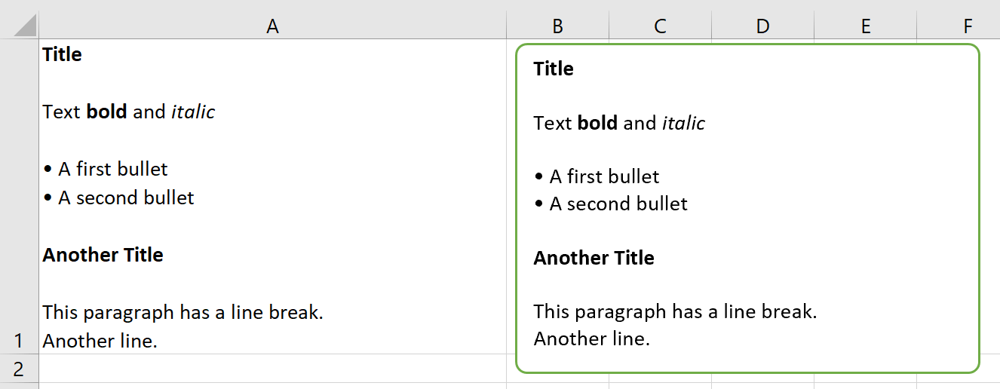
Feature Added support for the
Fontobject viarangeorshapeobjects, seeFont(GH 897 and GH 559).Feature Added support for the
Charactersobject viarangeorshapeobjects, seeCharacters.
v0.22.3 (Mar 3, 2021)
Enhancement As a convenience method, you can now directly export sheets to PDF instead of having to go through the book:
mysheet.to_pdf()(GH 1517).PRO Bug Fix Running
RunPythonwith embedded code was broken in 0.22.0 (GH 1530).
v0.22.2 (Feb 8, 2021)
Bug Fix Windows: If the path of the Excel file included a single quote, UDFs were failing (GH 1511).
Bug Fix macOS: Prevent Excel from showing up when using hidden Excel instances via
xw.App(visible=False)(GH 1508).
v0.22.1 (Feb 4, 2021)
PRO Bug Fix:
Table.updatehas been fixed so it also works when the table is the data source of a chart (GH 1507).PRO [Docs]: New documentation about how to work with Excel charts in templates; see Quickstart.
v0.22.0 (Jan 29, 2021)
Feature While it’s always been possible to somehow create your own xlwings-based add-ins, this release adds a toolchain to make it a lot easier to create your own white-labeled add-in, see Custom Add-ins (GH 1488).
Enhancement
xw.viewnow formats the pandas DataFrames as Excel table and with the newxw.loadfunction, you can easily load a DataFrame from your active workbook into a Jupyter notebook. See Jupyter Notebooks: Interact with Excel for a full tutorial (GH 1487).Feature New method
mysheet.copy()(GH 123).PRO Feature: in addition to
xw.create_report(), you can now also work within a workbook by using the newmysheet.render_template()method, see also Quickstart (GH 1478).
v0.21.4 (Nov 23, 2020)
Enhancement New property
Shape.textto read and write text to the text frame of shapes (GH 1456).PRO Feature: xlwings Reports now supports template text in shapes, see xlwings Reports.
v0.21.3 (Nov 22, 2020)
PRO Breaking Change: The
Table.updatemethod has been changed to treat the DataFrame’s index consistently whether or not it’s being written to an Excel table: by default, the index is now transferred to Excel in both cases.
v0.21.2 (Nov 15, 2020)
Bug Fix The default
quickstartsetup now also works when you store your workbooks on OneDrive (GH 1275)Bug Fix Excel files that have single quotes in their paths are now working correctly (GH 1021)
v0.21.1 (Nov 13, 2020)
Enhancement Added new method
Book.to_pdf()to easily export PDF reports. Needless to say, this integrates very nicely with xlwings Reports (GH 1363).Enhancement Added support for
Sheet.visible(GH 1459).
v0.21.0 (Nov 9, 2020)
Enhancement Added support for Excel tables, see:
TableandTablesandrange.table(GH 47 and GH 1364)Enhancement: When using UDFs, you can now use
'range'for theconvertargument where you would use beforexw.Range. The latter will be removed in a future version (GH 1455).Enhancement Windows: The
comtypesrequirement has been dropped (GH 1443).PRO Feature:
Table.updateoffers an easy way to keep your Excel tables in sync with your DataFrame source (GH 1454).PRO Enhancement: The reports package now supports Excel tables in the templates. This is e.g. helpful to style the tables with striped rows, see Excel Tables (GH 1364).
v0.20.8 (Oct 18, 2020)
Enhancement Windows: With UDFs, you can now get easy access to the caller (an xlwings range object) by using
calleras a function argument (GH 1434). In that sense,calleris now a reserved argument by xlwings and if you have any existing arguments with this name, you’ll need to rename them:
@xw.func
def get_caller_address(caller):
# caller will not be exposed in Excel, so use it like so:
# =get_caller_address()
return caller.address
Bug Fix Windows: The setting
Show Consolenow also shows/hides the command prompt properly when using the UDF server with Conda. There is no more switching betweenpythonandpythonwrequired (GH 1435 and GH 1421).Bug Fix Windows: Functions called via
RunPythonwithUse UDF Serveractivated don’t require thexw.subdecorator anymore (GH 1418).
v0.20.7 (Sep 3, 2020)
Bug Fix Windows: Fix a regression introduced with 0.20.0 that would cause an
AttributeError: Range.CLSIDwith async and legacy dynamic array UDFs (GH 1404).Enhancement: Matplotlib figures are now converted to 300 dpi pictures for better quality when using them with
pictures.add(GH 1402).
v0.20.6 (Sep 1, 2020)
Bug Fix macOS:
App(visible=False)has been fixed (GH 652).Bug Fix macOS: The regression with
Book.fullnamethat was introduced with 0.20.1 has been fixed (GH 1390).Bug Fix Windows: The retry mechanism has been improved (GH 1398).
v0.20.5 (Aug 27, 2020)
Bug Fix The conda version check was failing with spaces in the installation path (GH 1396).
Bug Fix Windows: when running
app.quit(), the application is now properly closed without leaving a zombie process behind (GH 1397).
v0.20.4 (Aug 20, 2020)
Enhancement The add-in can now optionally be installed without the password protection:
xlwings addin install --unprotected(GH 1392).
v0.20.3 (Aug 15, 2020)
Bug Fix The conda version check was erroneously triggered when importing UDFs on systems without conda. (GH 1389).
v0.20.2 (Aug 13, 2020)
PRO Feature: Code can now be embedded by calling the new
xlwings code embed [--file]CLI command (GH 1380).Bug Fix Made the import UDFs functionality more robust to prevent an Automation 440 error that some users would see (GH 1381).
Enhancement The standalone Excel file now includes all VBA dependencies to make it work on Windows and macOS (GH 1349).
Enhancement xlwings now blocks the call if the Conda Path/Env settings are used with legacy Conda installations (GH 1384).
v0.20.1 (Aug 7, 2020)
Bug Fix macOS: password-protected sheets caused an alert when calling
xw.Book(GH 1377).Bug Fix macOS: calling
wb.save('newname.xlsx')wasn’t updating thewbobject properly and caused an alert (GH 1129 and GH 626 and GH 957).
v0.20.0 (Jul 22, 2020)
This version drops support for Python 3.5
Feature New property
xlwings.App.status_bar(GH 1362).Enhancement
xlwings.view()now becomes the active window, making it easier to work with in interactive workflows (please speak up if you feel differently) (GH 1353).Bug Fix The UDF server has received a serious upgrade by njwhite, getting rid of the many issues that were around with using a combination of async functions and legacy dynamic arrays. You can now also call functions defined via
async def, although for the time being they are still called synchronously from Excel (GH 1010 and GH 1164).
v0.19.5 (Jul 5, 2020)
Enhancement When you install the add-in via
xlwings addin install, it autoconfigures the add-in if it can’t find an existing user config file (GH 1322).Feature New
xlwings config create [--force]command that autogenerates the user config file with the Python settings from which you run the command. Can be used to reset the add-in settings with the--forceoption (GH 1322).Feature: There is a new option to show/hide the console window. Note that with
Conda PathandConda Envset, the console always pops up when using the UDF server. Currently only available on Windows (GH 1182).Enhancement The
Interpretersetting has been deprecated in favor of platform-specific settings:Interpreter_WinandInterpreter_Mac, respectively. This allows you to use the sheet config unchanged on both platforms (GH 1345).Enhancement On macOS, you can now use a few environment-like variables in your settings:
$HOME,$APPLICATIONS,$DOCUMENTS,$DESKTOP(GH 615).Bug Fix: Async functions sometimes caused an error on older Excel versions without dynamic arrays (GH 1341).
v0.19.4 (May 20, 2020)
Feature
xlwings addin installis now available on macOS. On Windows, it has been fixed so it should now work reliably (GH 704).Bug Fix Fixed a
dll load failedissue withpywin32when installed viapipon Python 3.8 (GH 1315).
v0.19.3 (May 19, 2020)
PRO Feature: Added possibility to create deployment keys.
v0.19.2 (May 11, 2020)
Feature New methods
xlwings.Shape.scale_height()andxlwings.Shape.scale_width()(GH 311).Bug Fix Using
Pictures.addis not distorting the proportions anymore (GH 311).PRO Feature: Added support for Plotly static charts (GH 1309).
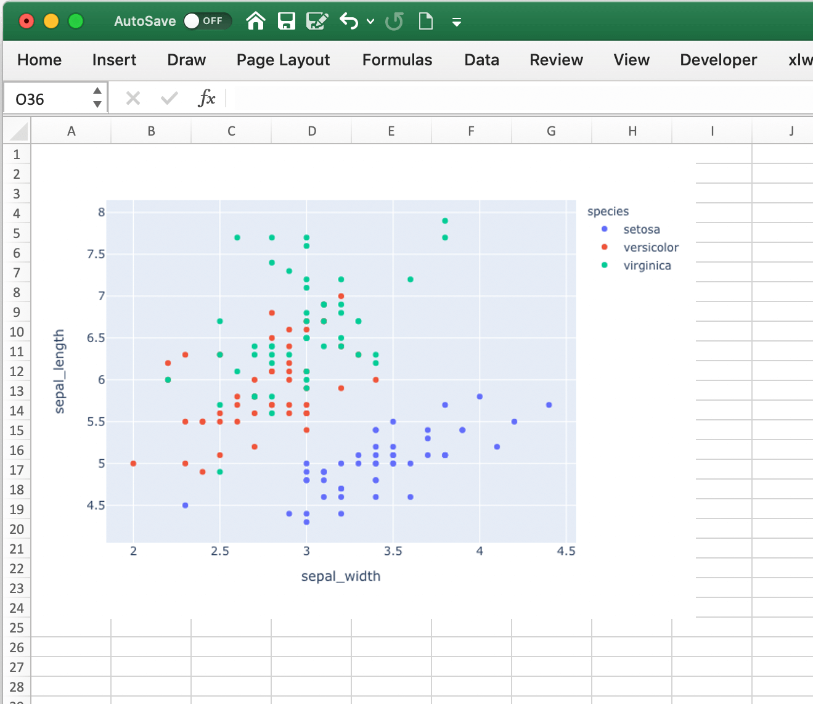
v0.19.1 (May 4, 2020)
Bug Fix Fixed an issue with the xlwings PRO license key when there was no
xlwings.conffile (GH 1308).
v0.19.0 (May 2, 2020)
Bug Fix Native dynamic array formulas can now be used with async formulas (GH 1277)
Enhancement Quickstart references the project’s name when run from Python instead of the active book (GH 1307)
Breaking Change:
Conda Basehas been renamed intoConda Pathto reduce the confusion with theConda Envcalledbase. Please adjust your settings accordingly! (GH 1194)
v0.18.0 (Feb 15, 2020)
Feature Added support for merged cells:
xlwings.Range.merge_area,xlwings.Range.merge_cells,xlwings.Range.merge()xlwings.Range.unmerge()(GH 21).Bug Fix
RunPythonnow works properly with files that have a URL asfullname, i.e. OneDrive and SharePoint (GH 1253).Bug Fix Fixed a bug with
wb.names['...'].refers_to_rangeon macOS (GH 1256).
v0.17.1 (Jan 31, 2020)
Bug Fix Handle
np.float64('nan')correctly (GH 1116).
v0.17.0 (Jan 6, 2020)
This release drops support for Python 2.7 in xlwings CE. If you still rely on Python 2.7, you will need to stick to v0.16.6.
v0.16.6 (Jan 5, 2020)
Enhancement CLI changes with respect to
xlwings license(GH 1227).
v0.16.5 (Dec 30, 2019)
v0.16.4 (Dec 17, 2019)
Enhancement Added support for
xlwings.Range.copy()(GH 1214).Enhancement Added support for
xlwings.Range.paste()(GH 1215).Enhancement Added support for
xlwings.Range.insert()(GH 80).Enhancement Added support for
xlwings.Range.delete()(GH 862).
v0.16.3 (Dec 12, 2019)
Bug Fix Sometimes, xlwings would show an error of a previous run. Moreover, 0.16.2 introduced an issue that would not show errors at all on non-conda setups (GH 1158 and GH 1206)
Enhancement The xlwings CLI now prints the version number (GH 1200)
Breaking Change
LOG FILEhas been retired and removed from the configuration/add-in.
v0.16.2 (Dec 5, 2019)
Bug Fix
RunPythoncan now be called in parallel from different Excel instances (GH 1196).
v0.16.1 (Dec 1, 2019)
Enhancement
xlwings.Book()andmyapp.books.open()now accept parameters likeupdate_links,passwordetc. (GH 1189).Bug Fix
Conda Envnow works correctly withbasefor UDFs, too (GH 1110).Bug Fix
Conda Basenow allows spaces in the path (GH 1176).Enhancement The UDF server timeout has been increased to 2 minutes (GH 1168).
v0.16.0 (Oct 13, 2019)
This release adds a small but very powerful feature: There’s a new Run main button in the add-in.
With that, you can run your Python scripts from standard xlsx files - no need to save your workbook
as macro-enabled anymore!
The only condition to make that work is that your Python script has the same name as your workbook and that it contains
a function called main, which will be called when you click the Run button. All settings from your config file or
config sheet are still respected, so this will work even if you have the source file in a different directory
than your workbook (as long as that directory is added to the PYTHONPATH in your config).
The xlwings quickstart myproject has been updated accordingly. It still produces an xlsm file at the moment
but you can save it as xlsx file if you intend to run it via the new Run button.
```{image} images/ribbon.png
```
v0.15.10 (Aug 31, 2019)
Bug Fix Fixed a Python 2.7 incompatibility introduced with 0.15.9.
v0.15.9 (Aug 31, 2019)
Enhancement The
sqlextension now uses the native dynamic arrays if available (GH 1138).Enhancement xlwings now support
Pathobjects frompathlibfor all file paths (GH 1126).
v0.15.8 (May 5, 2019)
Bug Fix Fixed an issue introduced with the previous release that always showed the command prompt when running UDFs, not just when using conda envs (GH 1098).
v0.15.7 (May 5, 2019)
Bug Fix
Conda BaseandConda Envweren’t stored correctly in the config file from the ribbon (GH 1090).Bug Fix UDFs now work correctly with
Conda BaseandConda Env. Note, however, that currently there is no way to hide the command prompt in that configuration (GH 1090).Enhancement
Restart UDF Servernow actually does what it says: it stops and restarts the server. Previously it was only stopping the server and only when the first call to Python was made, it was started again (GH 1096).
v0.15.6 (Apr 29, 2019)
Feature New default converter for
OrderedDict(GH 1068).Enhancement
Import Functionsnow restarts the UDF server to guarantee a clean state after importing. (GH 1092)Enhancement The ribbon now shows tooltips on Windows (GH 1093)
Bug Fix RunPython now properly supports conda environments on Windows (they started to require proper activation with packages like numpy etc). Conda >=4.6. required. A fix for UDFs is still pending (GH 954).
Breaking Change
Bug Fix
RunFronzenPythonnow accepts spaces in the path of the executable, but in turn requires to be called with command line arguments as a separate VBA argument. Example:RunFrozenPython "C:\path\to\frozen_executable.exe", "arg1 arg2"(GH 1063).
v0.15.5 (Mar 25, 2019)
Enhancement
wb.macro()now accepts xlwings objects as arguments such asrange,sheetetc. when the VBA macro expects the corresponding Excel object (e.g.Range,Worksheetetc.) (GH 784 and GH 1084)
Breaking Change
Cells that contain a cell error such as
#DIV/0!,#N/A,#NAME?,#NULL!,#NUM!,#REF!,#VALUE!return nowNoneas value in Python. Previously they were returned as constant on Windows (e.g.-2146826246) ork.missing_valueon Mac.
v0.15.4 (Mar 17, 2019)
[Win] BugFix: The ribbon was not showing up in Excel 2007. (GH 1039)
Enhancement: Allow to install xlwings on Linux even though it’s not a supported platform:
export INSTALL_ON_LINUX=1; pip install xlwings(GH 1052)
v0.15.3 (Feb 23, 2019)
Bug Fix release:
[Mac]
RunPythonwas broken by the previous release. If you install viaconda, make sure to runxlwings runpython installagain! (GH 1035)[Win] Sometimes, the ribbon was throwing errors (GH 1041)
v0.15.2 (Feb 3, 2019)
Better support and docs for deployment, see Deployment:
You can now package your python modules into a zip file for easier distribution (GH 1016).
RunFrozenPythonnow allows to includes arguments, e.g.RunFrozenPython "C:\path\to\my.exe arg1 arg2"(GH 588).
Breaking Change
Accessing a not existing PID in the
appscollection raises now aKeyErrorinstead of anException(GH 1002).
v0.15.1 (Nov 29, 2018)
Bug Fix release:
[Win] Calling Subs or UDFs from VBA was causing an error (GH 998).
v0.15.0 (Nov 20, 2018)
Dynamic Array Refactor
While we’re all waiting for the new native dynamic arrays, it’s still going to take another while until the majority can use them (they are not yet part of Office 2019).
In the meantime, this refactor improves the current xlwings dynamic arrays in the following way:
Use of native (“legacy”) array formulas instead of having a normal formula in the top left cell and writing around it
It’s up to 2x faster
There’s no empty row/col required outside of the dynamic array anymore
It continues to overwrite existing cells (no change there)
There’s a small breaking change in the unlikely case that you were assigning values with the expand option:
myrange.options(expand='table').value = [['b'] * 3] * 3. This was previously clearing contiguous cells to the right and bottom (or one of them depending on the option), now you have to do that explicitly.
Bug Fixes:
Importing multiple UDF modules has been fixed (GH 991).
v0.14.1 (Nov 9, 2018)
This is a bug fix release:
[Win] Fixed an issue when the new
async_modewas used together with numpy arrays (GH 984)[Mac] Fixed an issue with multiple arguments in
RunPython(GH 905)[Mac] Fixed an issue with the config file (GH 982)
v0.14.0 (Nov 5, 2018)
Features:
This release adds support for asynchronous functions (like all UDF related functionality, this is only available on Windows). Making a function asynchronous is as easy as:
import xlwings as xw
import time
@xw.func(async_mode='threading')
def myfunction(a):
time.sleep(5) # long running tasks
return a
See Asynchronous UDFs for the full docs.
Bug Fixes:
v0.13.0 (Oct 22, 2018)
Features:
This release adds a REST API server to xlwings, allowing you to easily expose your workbook over the internet.
Enhancements:
Dynamic arrays are now more robust. Before, they often didn’t manage to write everything when there was a lot going on in the workbook (GH 880)
Jagged arrays (lists of lists where not all rows are of equal length) now raise an error (GH 942)
xlwings can now be used with threading, see the docs: Threading (GH 759).
[Win] xlwings now enforces pywin32 224 when installing xlwings on Python 3.7 (GH 959)
New :any:
xlwings.Sheet.used_rangeproperty (GH 112)
Bug Fixes:
The current directory is now inserted in front of everything else on the PYTHONPATH (GH 958)
The standalone files had an issue in the VBA module (GH 960)
Breaking Change
Members of the
xw.appscollection are now accessed by key (=PID) instead of index, e.g.:xw.apps[12345]instead ofxw.apps[0]. The apps collection also has a newxw.apps.keys()method. (GH 951)
v0.12.1 (Oct 7, 2018)
[Py27] Bug Fix for a Python 2.7 glitch.
v0.12.0 (Oct 7, 2018)
Features:
This release adds support to call Python functions from VBA in all Office apps (e.g. Access, Outlook etc.), not just Excel. As this uses UDFs, it is only available on Windows. See the docs: xlwings with other Office Apps.
Breaking Change
Previously, Python functions were always returning 2d arrays when called from VBA, no matter whether it was actually a 2d array or not. Now you get the proper dimensionality which makes it easier if the return value is e.g. a string or scalar as you don’t have to unpack it anymore.
Consider the following example using the VBA Editor’s Immediate Window after importing UDFs from a project created
using by xlwings quickstart:
Old behaviour:
?TypeName(hello("xlwings"))
Variant()
?hello("xlwings")(0,0)
hello xlwings
New behaviour:
?TypeName(hello("xlwings"))
String
?hello("xlwings")
hello xlwings
Bug Fixes:
[Win] Support expansion of environment variables in config values (GH 615)
v0.11.8 (May 13, 2018)
[Win] pywin32 is now automatically installed when using pip (GH 827)
xlwings.bashas been readded to the python package. This facilitates e.g. the use of xlwings within other addins (GH 857)
v0.11.7 (Feb 5, 2018)
[Win] This release fixes a bug introduced with v0.11.6 that wouldn’t allow to open workbooks by name (GH 804)
v0.11.6 (Jan 27, 2018)
Bug Fixes:
[Win] When constantly writing to a spreadsheet, xlwings now correctly resumes after clicking into cells, previously it was crashing. (GH 587)
Options are now correctly applied when writing to a sheet (GH 798)
v0.11.5 (Jan 7, 2018)
This is mostly a bug fix release:
Config files can now additionally be saved in the directory of the workbooks, overriding the global Ribbon config, see Making use of Environment Variables (GH 772)
Reading Pandas DataFrames with a simple index was creating a MultiIndex with Pandas > 0.20 (GH 786)
[Win] The xlwings dlls are now properly versioned, allowing to use pre 0.11 releases in parallel with >0.11 releases (GH 743)
[Mac] Sheet.names.add() was always adding the names on workbook level (GH 771)
[Mac] UDF decorators now don’t cause errors on Mac anymore (GH 780)
v0.11.4 (Jul 23, 2017)
This release brings further improvements with regards to the add-in:
The add-in now shows the version on the ribbon. This makes it easy to check if you are using the correct version (GH 724):
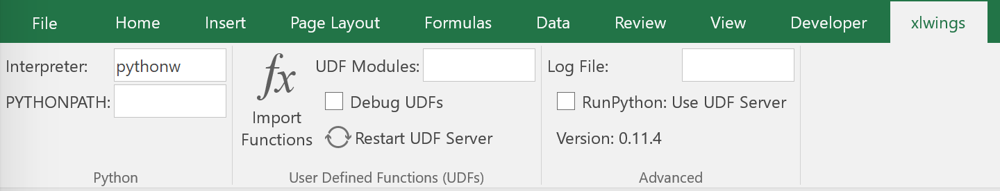
[Mac] On Mac Excel 2016, the ribbon now only shows the available functionality (GH 723):
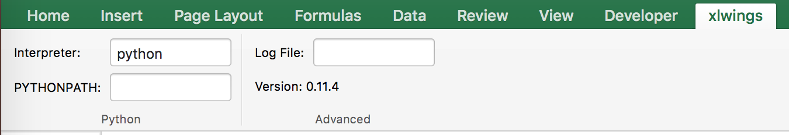
[Mac] Mac Excel 2011 is now supported again with the new add-in. However, since Excel 2011 doesn’t support the ribbon, the config file has been created/edited manually, see Making use of Environment Variables (GH 714).
Also, some new docs:
[Win] How to use imported functions in VBA, see Call UDFs from VBA.
For more up-to-date installations via conda, use the
conda-forgechannel, see Installation.A troubleshooting section: Troubleshooting.
v0.11.3 (Jul 14, 2017)
Bug Fix: When using the
xlwings.confsheet, there was a subscript out of range error (GH 708)Enhancement: The add-in is now password protected (pw:
xlwings) to declutter the VBA editor (GH 710)
You need to update your xlwings add-in to get the fixes!
v0.11.2 (Jul 6, 2017)
Bug Fix: The sql extension was sometimes not correctly assigning the table aliases (GH 699)
Bug Fix: Permission errors during pip installation should be resolved now (GH 693)
v0.11.1 (Jul 5, 2017)
Bug Fix: The sql extension installs now correctly (GH 695)
v0.11.0 (Jul 2, 2017)
Big news! This release adds a full blown add-in! We also throw in a great In-Excel SQL Extension and a few bug fixes:
Add-in
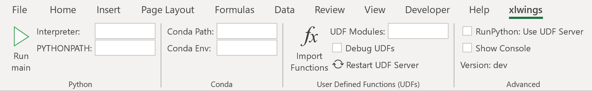
A few highlights:
Settings don’t have to be manipulated in VBA code anymore, but can be either set globally via Ribbon/config file or for the workbook via a special worksheet
UDF server can be restarted directly from the add-in
You can still use a VBA module instead of the add-in, but the recommended way is the add-in
Get all the details here: Add-in & Settings
In-Excel SQL Extension
The add-in can be extended with own code. We throw in an sql function, that allows you to perform SQL queries
on data in your spreadsheets. It’s pretty awesome, get the details here: Extensions.
Bug Fixes
[Win]: Running
Debug > Compileis not throwing errors anymore (GH 678)Pandas deprecation warnings have been fixed (GH 675 and GH 664)
[Mac]: Errors are again shown correctly in a pop up (GH 660)
[Mac]: Like Windows, Mac now also only shows errors in a popup. Before it was including stdout, too (GH 666)
Breaking Change
RunFrozenPythonnow requires the full path to the executable.The xlwings CLI
xlwings templatefunctionality has been removed. Usequickstartinstead.
Migrate to v0.11 (Add-in)
This migration guide shows you how you can start using the new xlwings add-in as opposed to the old xlwings VBA module (and the old add-in that consisted of just a single import button).
Upgrade the xlwings Python package
Check where xlwings is currently installed
>>> import xlwings >>> xlwings.__path__
If you installed xlwings with pip, for once, you should first uninstall xlwings:
pip uninstall xlwingsCheck the directory that you got under 1): if there are any files left over, delete the
xlwingsfolder and the remaining files manuallyInstall the latest xlwings version:
pip install xlwingsVerify that you have >= 0.11 by doing
>>> import xlwings >>> xlwings.__version__
Install the add-in
If you have the old xlwings addin installed, find the location and remove it or overwrite it with the new version (see next step). If you installed it via the xlwings command line client, you should be able to do:
xlwings addin remove.Close Excel. Run
xlwings addin installfrom a command prompt. Reopen Excel and check if the xlwings Ribbon appears. If not, copyxlwings.xlam(from your xlwings installation folder underaddin\xlwings.xlammanually into theXLSTARTfolder. You can find the location of this folder under Options > Trust Center > Trust Center Settings… > Trusted Locations, under the descriptionExcel default location: User StartUp. Restart Excel and you should see the add-in.
Upgrade existing workbooks
Make a backup of your Excel file
Open the file and go to the VBA Editor (
Alt-F11)Remove the xlwings VBA module
Add a reference to the xlwings addin, see Installation
If you want to use workbook specific settings, add a sheet
xlwings.conf, see Workbook Config: xlwings.conf Sheet
Note: To import UDFs, you need to have the reference to the xlwings add-in set!
v0.10.4 (Feb 19, 2017)
[Win] Bug Fix: v0.10.3 introduced a bug that imported UDFs by default with
volatile=True, this has now been fixed. You will need to reimport your functions after upgrading the xlwings package.
v0.10.3 (Jan 28, 2017)
This release adds new features to User Defined Functions (UDFs):
categories
volatile option
suppress calculation in function wizard
Syntax:
import xlwings as xw
@xw.func(category="xlwings", volatile=False, call_in_wizard=True)
def myfunction():
return ...
For details, check out the (also new) and comprehensive API docs about the decorators: UDF decorators
v0.10.2 (Dec 31, 2016)
[Win] Python 3.6 is now supported (GH 592)
v0.10.1 (Dec 5, 2016)
Writing a Pandas Series with a MultiIndex header was not writing out the header (GH 572)
[Win] Docstrings for UDF arguments are now working (GH 367)
[Mac]
Range.clear_contents()has been fixed (it was doingclear()instead) (GH 576)xw.Book(...)andxw.books.open(...)raise now the same error in case the file doesn’t exist (GH 540)
v0.10.0 (Sep 20, 2016)
Dynamic Array Formulas
This release adds an often requested & powerful new feature to User Defined Functions (UDFs): Dynamic expansion for
array formulas. While Excel offers array formulas, you need to specify their dimensions up front by selecting the
result array first, then entering the formula and finally hitting Ctrl-Shift-Enter. While this makes sense from
a data integrity point of view, in practice, it often turns out to be a cumbersome limitation, especially when working
with dynamic arrays such as time series data.
This is a simple example that demonstrates the syntax and effect of UDF expansion:
import numpy as np
@xw.func
@xw.ret(expand='table')
def dynamic_array(r, c):
return np.random.randn(int(r), int(c))
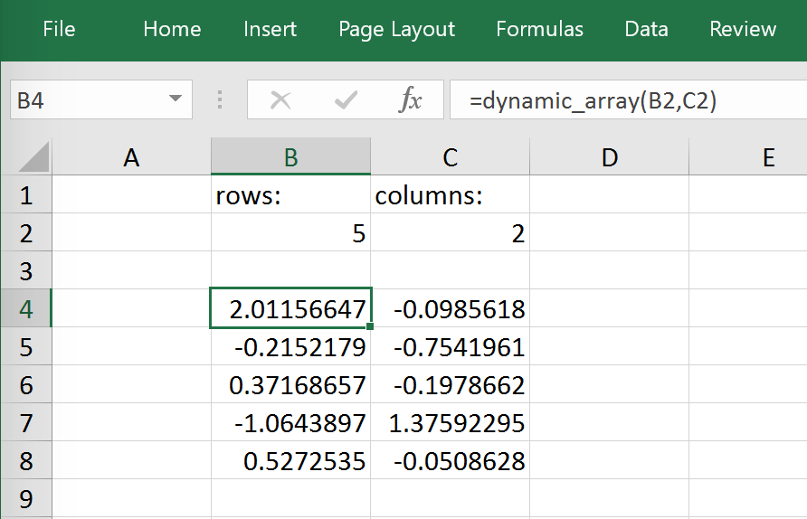

Note: Expanding array formulas will overwrite cells without prompting and leave an empty border around them, i.e. they will clear the row to the bottom and the column to the right of the array.
Bug Fixes
The
intconverter works now always as you would expect (e.g.:xw.Range('A1').options(numbers=int).value). Before, it could happen that the number was off by 1 due to floating point issues (GH 554).
v0.9.3 (Aug 22, 2016)
[Win]
App.visiblewasn’t behaving correctly (GH 551).[Mac] Added support for the new 64bit version of Excel 2016 on Mac (GH 549).
Unicode book names are again supported (GH 546).
xlwings.Book.save()now supports relative paths. Also, when saving an existing book under a new name without specifying the full path, it’ll be saved in Python’s current working directory instead of in Excel’s default directory (GH 185).
v0.9.2 (Aug 8, 2016)
Another round of bug fixes:
[Mac]: Sometimes, a column was referenced instead of a named range (GH 545)
[Mac]: Python 2.7 was raising a
LookupError: unknown encoding: mbcs(GH 544)Fixed docs regarding set_mock_caller (GH 543)
v0.9.1 (Aug 5, 2016)
This is a bug fix release: As to be expected after a rewrite, there were some rough edges that have now been taken care of:
[Win] Opening a file via
xw.Book()was causing an additionalBook1to be opened in case Excel was not running yet (GH 531)[Win] Some users were getting an ImportError (GH 533)
[PY 2.7]
RunPythonwas broken with Python 2.7 (GH 537)
v0.9.0 (Aug 2, 2016)
Exciting times! v0.9.0 is a complete rewrite of xlwings with loads of syntax changes (hence the version jump). But more importantly, this release adds a ton of new features and bug fixes that would have otherwise been impossible. Some of the highlights are listed below, but make sure to check out the full migration guide below for the syntax changes in details. Note, however, that the syntax for user defined functions (UDFs) did not change. At this point, the API is fairly stable and we’re expecting only smaller changes on our way towards a stable v1.0 release.
Active book instead of current book:
xw.Range('A1')goes against the active sheet of the active book like you’re used to from VBA. Instantiating an explicit connection to a Book is not necessary anymore:>>> import xlwings as xw >>> xw.Range('A1').value = 11 >>> xw.Range('A1').value 11.0
Excel Instances: Full support of multiple Excel instances (even on Mac!)
>>> app1 = xw.App() >>> app2 = xw.App() >>> xw.apps Apps([<Excel App 1668>, <Excel App 1644>])
New powerful object model based on collections and close to Excel’s original, allowing to fully qualify objects:
xw.apps[0].books['MyBook.xlsx'].sheets[0].range('A1:B2').valueIt supports both Python indexing (square brackets) and Excel indexing (round brackets):
xw.books[0].sheets[0]is the same asxw.books(1).sheets(1)It also supports indexing and slicing of range objects:
>>> rng = xw.Range('A1:E10') >>> rng[1] <Range [Workbook1]Sheet1!$B$1> >>> rng[:2, :2] <Range [Workbook1]Sheet1!$A$1:$B$2>
For more details, see Syntax Overview.
UDFs can now also be imported from packages, not just modules (GH 437)
Named Ranges: Introduction of full object model and proper support for sheet and workbook scope (GH 256)
Excel doesn’t become the active window anymore so the focus stays on your Python environment (GH 414)
When writing to ranges while Excel is busy, xlwings is now retrying until Excel is idle again (GH 468)
xlwings.view()has been enhanced to accept an optional sheet object (GH 469)Objects like books, sheets etc. can now be compared (e.g.
wb1 == wb2) and are properly hashableNote that support for Python 2.6 has been dropped
Some of the new methods/properties worth mentioning are:
:any:
xlwings.App.display_alertsxlwings.App.macro()in addition toxlwings.Book.macro():any:
xlwings.Sheet.cells:any:
xlwings.Range.rows:any:
xlwings.Range.columns:any:
xlwings.Range.raw_value
Bug Fixes
See here for details about which bugs have been fixed.
Migrate to v0.9
The purpose of this document is to enable you a smooth experience when upgrading to xlwings v0.9.0 and above by laying out the concept and syntax changes in detail. If you want to get an overview of the new features and bug fixes, have a look at the release notes above. Note that the syntax for User Defined Functions (UDFs) didn’t change.
Full qualification: Using collections
The new object model allows to specify the Excel application instance if needed:
old:
xw.Range('Sheet1', 'A1', wkb=xw.Workbook('Book1'))new:
xw.apps[0].books['Book1'].sheets['Sheet1'].range('A1')
See Syntax Overview for the details of the new object model.
Connecting to Books
old:
xw.Workbook()new:
xw.Book()or viaxw.booksif you need to control the app instance.
See Connect to a Book for the details.
Active Objects
# Active app (i.e. Excel instance)
>>> app = xw.apps.active
# Active book
>>> wb = xw.books.active # in active app
>>> wb = app.books.active # in specific app
# Active sheet
>>> sht = xw.sheets.active # in active book
>>> sht = wb.sheets.active # in specific book
# Range on active sheet
>>> xw.Range('A1') # on active sheet of active book of active app
Round vs. Square Brackets
Round brackets follow Excel’s behavior (i.e. 1-based indexing), while square brackets use Python’s 0-based indexing/slicing.
As an example, the following all reference the same range:
xw.apps[0].books[0].sheets[0].range('A1')
xw.apps(1).books(1).sheets(1).range('A1')
xw.apps[0].books['Book1'].sheets['Sheet1'].range('A1')
xw.apps(1).books('Book1').sheets('Sheet1').range('A1')
Access the underlying Library/Engine
old:
xw.Range('A1').xl_rangeandxl_sheetetc.new:
xw.Range('A1').api, same for all other objects
This returns a pywin32 COM object on Windows and an appscript object on Mac.
Cheat sheet
Note that sht stands for a sheet object, like e.g. (in 0.9.0 syntax): sht = xw.books['Book1'].sheets[0]
v0.9.0 |
v0.7.2 |
|
|---|---|---|
Active Excel instance |
|
unsupported |
New Excel instance |
|
unsupported |
Get app from book |
|
|
Target installation (Mac) |
|
|
Hide Excel Instance |
|
|
Selected Range |
|
|
Calculation mode |
|
|
All books in app |
|
unsupported |
Fully qualified book |
|
unsupported |
Active book in active app |
|
|
New book in active app |
|
|
New book in specific app |
|
unsupported |
All sheets in book |
|
|
Call a macro in an addin |
|
unsupported |
First sheet of book wb |
|
|
Active sheet |
|
|
Add sheet |
|
|
Sheet count |
|
|
Add chart to sheet |
|
|
Existing chart |
|
|
Chart Type |
|
|
Add picture to sheet |
|
|
Existing picture |
|
|
Matplotlib |
|
|
Table expansion |
|
|
Vertical expansion |
|
|
Horizontal expansion |
|
|
Set name of range |
|
|
Get name of range |
|
|
mock caller |
|
|
v0.7.2 (May 18, 2016)
Bug Fixes
[Win] UDFs returning Pandas DataFrames/Series containing
nanwere failing (GH 446).[Win]
RunFrozenPythonwas not finding the executable (GH 452).The xlwings VBA module was not finding the Python interpreter if
PYTHON_WINorPYTHON_MACcontained spaces (GH 461).
v0.7.1 (April 3, 2016)
Enhancements
[Win]: User Defined Functions (UDFs) support now optional/default arguments (GH 363)
[Win]: User Defined Functions (UDFs) support now multiple source files, see also under API changes below. For example (VBA settings):
UDF_MODULES="common;myproject"VBA Subs & Functions are now callable from Python:
As an example, this VBA function:
Function MySum(x, y) MySum = x + y End Function
can be accessed like this:
>>> import xlwings as xw >>> wb = xw.Workbook.active() >>> my_sum = wb.macro('MySum') >>> my_sum(1, 2) 3.0
New
xw.viewmethod: This opens a new workbook and displays an object on its first sheet. E.g.:>>> import xlwings as xw >>> import pandas as pd >>> import numpy as np >>> df = pd.DataFrame(np.random.rand(10, 4), columns=['a', 'b', 'c', 'd']) >>> xw.view(df)
New docs about Matplotlib & Plotly Charts and Custom Converter
New method:
xlwings.Range.formula_array()(GH 411)
API changes
VBA settings:
PYTHON_WINandPYTHON_MACmust now include the interpreter if you are not using the default (PYTHON_WIN = "") (GH 289). E.g.:PYTHON_WIN: "C:\Python35\pythonw.exe" PYTHON_MAC: "/usr/local/bin/python3.5"
[Win]: VBA settings:
UDF_PATHhas been replaced withUDF_MODULES. The default behaviour doesn’t change though (i.e. ifUDF_MODULES = "", then a Python source file with the same name as the Excel file, but with.pyending will be imported from the same directory as the Excel file).New:
UDF_MODULES: "mymodule" PYTHONPATH: "C:\path\to"
Old:
UDF_PATH: "C:\path\to\mymodule.py"
Bug Fixes
Numpy scalars issues were resolved (GH 415)
[Win]: xlwings was failing with freezers like cx_Freeze (GH 413)
[Win]: UDFs were failing if they were returning
Noneornp.nan(GH 390)Multiindex Pandas Series have been fixed (GH 383)
[Mac]:
xlwings runpython installwas failing (GH 424)
v0.7.0 (March 4, 2016)
This version marks an important first step on our path towards a stable release. It introduces converters, a new and powerful concept that brings a consistent experience for how Excel Ranges and their values are treated both when reading and writing but also across xlwings.Range objects and User Defined Functions (UDFs).
As a result, a few highlights of this release include:
Pandas DataFrames and Series are now supported for reading and writing, both via Range object and UDFs
New Range converter options:
transpose,dates,numbers,empty,expandNew dictionary converter
New UDF debug server
No more pyc files when using
RunPython
Converters are accessed via the new options method when dealing with xlwings.Range objects or via the @xw.arg
and @xw.ret decorators when using UDFs. As an introductory sample, let’s look at how to read and write Pandas DataFrames:
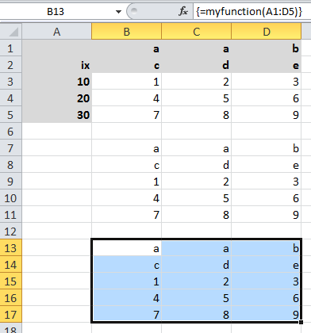
Range object:
>>> import xlwings as xw
>>> import pandas as pd
>>> wb = xw.Workbook()
>>> df = xw.Range('A1:D5').options(pd.DataFrame, header=2).value
>>> df
a b
c d e
ix
10 1 2 3
20 4 5 6
30 7 8 9
# Writing back using the defaults:
>>> Range('A1').value = df
# Writing back and changing some of the options, e.g. getting rid of the index:
>>> Range('B7').options(index=False).value = df
UDFs:
This is the same sample as above (starting in Range('A13') on screenshot). If you wanted to return a DataFrame with
the defaults, the @xw.ret decorator can be left away.:
@xw.func
@xw.arg('x', pd.DataFrame, header=2)
@xw.ret(index=False)
def myfunction(x):
# x is a DataFrame, do something with it
return x
Enhancements
Dictionary (
dict) converter:
>>> Range('A1:B2').options(dict).value {'a': 1.0, 'b': 2.0} >>> Range('A4:B5').options(dict, transpose=True).value {'a': 1.0, 'b': 2.0}
transposeoption: This works in both directions and finally allows us to e.g. write a list in column orientation to Excel (GH 11):Range('A1').options(transpose=True).value = [1, 2, 3]
datesoption: This allows us to read Excel date-formatted cells in specific formats:>>> import datetime as dt >>> Range('A1').value datetime.datetime(2015, 1, 13, 0, 0) >>> Range('A1').options(dates=dt.date).value datetime.date(2015, 1, 13)
emptyoption: This allows us to override the default behavior for empty cells:>>> Range('A1:B1').value [None, None] >>> Range('A1:B1').options(empty='NA') ['NA', 'NA']
numbersoption: This transforms all numbers into the indicated type.>>> xw.Range('A1').value = 1 >>> type(xw.Range('A1').value) # Excel stores all numbers interally as floats float >>> type(xw.Range('A1').options(numbers=int).value) int
expandoption: This works the same as the Range propertiestable,verticalandhorizontalbut is only evaluated when getting the values of a Range:>>> import xlwings as xw >>> wb = xw.Workbook() >>> xw.Range('A1').value = [[1,2], [3,4]] >>> rng1 = xw.Range('A1').table >>> rng2 = xw.Range('A1').options(expand='table') >>> rng1.value [[1.0, 2.0], [3.0, 4.0]] >>> rng2.value [[1.0, 2.0], [3.0, 4.0]] >>> xw.Range('A3').value = [5, 6] >>> rng1.value [[1.0, 2.0], [3.0, 4.0]] >>> rng2.value [[1.0, 2.0], [3.0, 4.0], [5.0, 6.0]]
All these options work the same with decorators for UDFs, e.g. for transpose:
@xw.arg('x', transpose=True)
@xw.ret(transpose=True)
def myfunction(x):
# x will be returned unchanged as transposed both when reading and writing
return x
Note: These options (dates, empty, numbers) currently apply to the whole Range and can’t be selectively
applied to e.g. only certain columns.
UDF debug server
The new UDF debug server allows you to easily debug UDFs: just set
UDF_DEBUG_SERVER = Truein the VBA Settings, at the top of the xlwings VBA module (make sure to update it to the latest version!). Then add the following lines to your Python source file and run it:if __name__ == '__main__': xw.serve()
When you recalculate the Sheet, the code will stop at breakpoints or print any statements that you may have. For details, see: Debugging.
pyc files: The creation of pyc files has been disabled when using
RunPython, leaving your directory in an uncluttered state when having the Python source file next to the Excel workbook (GH 326).
API changes
UDF decorator changes (it is assumed that xlwings is imported as
xwand numpy asnp):New
Old
@xw.func@xw.xlfunc@xw.arg@xw.xlarg@xw.ret@xw.xlret@xw.sub@xw.xlsubPay attention to the following subtle change:
New
Old
@xw.arg("x", np.array)@xw.xlarg("x", "nparray")Samples of how the new options method replaces the old Range keyword arguments:
New
Old
Range('A1:A2').options(ndim=2)Range('A1:A2', atleast_2d=True)Range('A1:B2').options(np.array)Range('A1:B2', asarray=True)Range('A1').options(index=False, header=False).value = dfRange('A1', index=False, header=False).value = dfUpon writing, Pandas Series are now shown by default with their name and index name, if they exist. This can be changed using the same options as for DataFrames (GH 276):
import pandas as pd # unchanged behaviour Range('A1').value = pd.Series([1,2,3]) # Changed behaviour: This will print a header row in Excel s = pd.Series([1,2,3], name='myseries', index=pd.Index([0,1,2], name='myindex')) Range('A1').value = s # Control this behaviour like so (as with DataFrames): Range('A1').options(header=False, index=True).value = s
NumPy scalar values
Previously, NumPy scalar values were returned as
np.atleast_1d. To keep the same behaviour, this now has to be set explicitly usingndim=1. Otherwise they’re returned as numpy scalar values.New
Old
Range('A1').options(np.array, ndim=1).valueRange('A1', asarray=True).value
Bug Fixes
A few bugfixes were made: GH 352, GH 359.
v0.6.4 (January 6, 2016)
API changes
None
Enhancements
Quickstart: It’s now easier than ever to start a new xlwings project, simply use the command line client (GH 306):
xlwings quickstart myprojectwill produce a folder with the following files, ready to be used (see Command Line Client (CLI)):myproject |--myproject.xlsm |--myproject.py
New documentation about how to use xlwings with other languages like R and Julia.
Bug Fixes
[Win]: Importing UDFs with the add-in was throwing an error if the filename was including characters like spaces or dashes (GH 331). To fix this, close Excel completely and run
xlwings addin update.[Win]:
Workbook.caller()is now also accessible within functions that are decorated with@xlfunc. Previously, it was only available with functions that used the@xlsubdecorator (GH 316).Writing a Pandas DataFrame failed in case the index was named the same as a column (GH 334).
v0.6.3 (December 18, 2015)
Bug Fixes
[Mac]: This fixes a bug introduced in v0.6.2: When using
RunPythonfrom VBA, errors were not shown in a pop-up window (GH 330).
v0.6.2 (December 15, 2015)
API changes
LOG_FILE: So far, the log file has been placed next to the Excel file per default (VBA settings). This has been changed as it was causing issues for files on SharePoint/OneDrive and Mac Excel 2016: The place where
LOG_FILE = ""refers to depends on the OS and the Excel version.
Enhancements
[Mac]: This version adds support for the VBA module on Mac Excel 2016 (i.e. the
RunPythoncommand) and is now feature equivalent with Mac Excel 2011 (GH 206).
Bug Fixes
[Win]: On certain systems, the xlwings dlls weren’t found (GH 323).
v0.6.1 (December 4, 2015)
Bug Fixes
[Python 3]: The command line client has been fixed (GH 319).
[Mac]: It now works correctly with
psutil>=3.0.0(GH 315).
v0.6.0 (November 30, 2015)
API changes
None
Enhancements
User Defined Functions (UDFs) - currently Windows only
The ExcelPython project has been fully merged into xlwings. This means that on Windows, UDF’s are now supported via decorator syntax. A simple example:
from xlwings import xlfunc @xlfunc def double_sum(x, y): """Returns twice the sum of the two arguments""" return 2 * (x + y)
For array formulas with or without NumPy, see the docs: User Defined Functions (UDFs)
Command Line Client
The new xlwings command line client makes it easy to work with the xlwings template and the developer add-in (the add-in is currently Windows-only). E.g. to create a new Excel spreadsheet from the template, run:
xlwings template open
For all commands, see the docs: Command Line Client (CLI)
Other enhancements:
New method:
xlwings.Sheet.delete()New method:
xlwings.Range.top()New method:
xlwings.Range.left()
v0.5.0 (November 10, 2015)
API changes
None
Enhancements
This version adds support for Matplotlib! Matplotlib figures can be shown in Excel as pictures in just 2 lines of code:
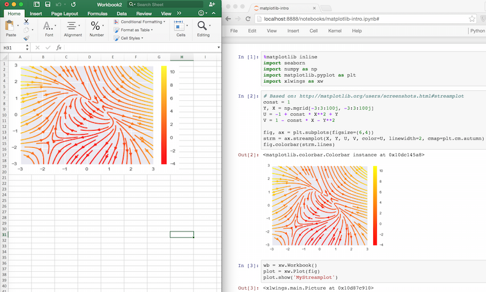
Get a matplotlib
figureobject:
via PyPlot interface:
import matplotlib.pyplot as plt
fig = plt.figure()
plt.plot([1, 2, 3, 4, 5])
via object oriented interface:
from matplotlib.figure import Figure
fig = Figure(figsize=(8, 6))
ax = fig.add_subplot(111)
ax.plot([1, 2, 3, 4, 5])
via Pandas:
import pandas as pd
import numpy as np
df = pd.DataFrame(np.random.rand(10, 4), columns=['a', 'b', 'c', 'd'])
ax = df.plot(kind='bar')
fig = ax.get_figure()
Show it in Excel as picture:
plot = Plot(fig)
plot.show('Plot1')
See the full API: xlwings.Plot(). There’s also a new example available both on
GitHub and as download on the
homepage.
Other enhancements:
New
xlwings.Shape()classNew
xlwings.Picture()classThe
PYTHONPATHin the VBA settings now accepts multiple directories, separated by;(GH 258)An explicit exception is raised when
Rangeis called with 0-based indices (GH 106)
Bug Fixes
Sheet.addwas not always acting on the correct workbook (GH 287)Iteration over a
Rangeonly worked the first time (GH 272)[Win]: Sometimes, an error was raised when Excel was not running (GH 269)
[Win]: Non-default Python interpreters (as specified in the VBA settings under
PYTHON_WIN) were not found if the path contained a space (GH 257)
v0.4.1 (September 27, 2015)
API changes
None
Enhancements
This release makes it easier than ever to connect to Excel from Python! In addition to the existing ways, you can now connect to the active Workbook (on Windows across all instances) and if the Workbook is already open, it’s good enough to refer to it by name (instead of having to use the full path). Accordingly, this is how you make a connection to… (GH 30 and GH 226):
a new workbook:
wb = Workbook()the active workbook [New!]:
wb = Workbook.active()an unsaved workbook:
wb = Workbook('Book1')a saved (open) workbook by name (incl. xlsx etc.) [New!]:
wb = Workbook('MyWorkbook.xlsx')a saved (open or closed) workbook by path:
wb = Workbook(r'C:\\path\\to\\file.xlsx')
Also, there are some new docs:
Bug Fixes
The Excel template was updated to the latest VBA code (GH 234).
Connections to files that are saved on OneDrive/SharePoint are now working correctly (GH 215).
Various issues with timezone-aware objects were fixed (GH 195).
[Mac]: A certain range of integers were not written to Excel (GH 227).
v0.4.0 (September 13, 2015)
API changes
None
Enhancements
The most important update with this release was made on Windows: The methodology used to make a connection
to Workbooks has been completely replaced. This finally allows xlwings to reliably connect to multiple instances of
Excel even if the Workbooks are opened from untrusted locations (network drives or files downloaded from the internet).
This gets rid of the dreaded Filename is already open... error message that was sometimes shown in this
context. It also allows the VBA hooks (RunPython) to work correctly if the very same file is opened in various instances of
Excel.
Note that you will need to update the VBA module and that apart from pywin32 there is now a new dependency for the
Windows version: comtypes. It should be installed automatically though when installing/upgrading xlwings with
pip.
Other updates:
Added support to manipulate named Ranges (GH 92):
>>> wb = Workbook() >>> Range('A1').name = 'Name1' >>> Range('A1').name >>> 'Name1' >>> del wb.names['Name1']
New
Rangeproperties (GH 81):Rangenow also acceptsSheetobjects, the following 3 ways are hence all valid (GH 92):
r = Range(1, 'A1')
r = Range('Sheet1', 'A1')
sheet1 = Sheet(1)
r = Range(sheet1, 'A1')
[Win]: Error pop-ups show now the full error message that can also be copied with
Ctrl-C(GH 221).
Bug Fixes
The VBA module was not accepting lower case drive letters (GH 205).
Fixed an error when adding a new Sheet that was already existing (GH 211).
v0.3.6 (July 14, 2015)
API changes
Application as attribute of a Workbook has been removed (wb is a Workbook object):
Correct Syntax (as before) |
Removed |
|---|---|
|
|
Enhancements
Excel 2016 for Mac Support (GH 170)
Excel 2016 for Mac is finally supported (Python side). The VBA hooks (RunPython) are currently not yet supported.
In more details:
This release allows Excel 2011 and Excel 2016 to be installed in parallel.
Workbook()will open the default Excel installation (usually Excel 2016).The new keyword argument
app_targetallows to connect to a different Excel installation, e.g.:
Workbook(app_target='/Applications/Microsoft Office 2011/Microsoft Excel')
Note that app_target is only available on Mac. On Windows, if you want to change the version of Excel that
xlwings talks to, go to Control Panel > Programs and Features and Repair the Office version that you want
as default.
The
RunPythoncalls in VBA are not yet available through Excel 2016 but Excel 2011 doesn’t get confused anymore if Excel 2016 is installed on the same system - make sure to update your VBA module!
Other enhancements
New method:
xlwings.Application.calculate()(GH 207)
Bug Fixes
[Win]: When using the
OPTIMIZED_CONNECTIONon Windows, Excel left an orphaned process running after closing (GH 193).
Various improvements regarding unicode file path handling, including:
[Mac]: Excel 2011 for Mac now supports unicode characters in the filename when called via VBA’s
RunPython(but not in the path - this is a limitation of Excel 2011 that will be resolved in Excel 2016) (GH 154).[Win]: Excel on Windows now handles unicode file paths correctly with untrusted documents. (GH 154).
v0.3.5 (April 26, 2015)
API changes
Sheet.autofit() and Range.autofit(): The integer argument for the axis has been removed (GH 186).
Use string arguments rows or r for autofitting rows and columns or c for autofitting columns
(as before).
Enhancements
New methods:
Example:
>>> rng = Range('A1').table
>>> rng.row, rng.column
(1, 1)
>>> rng.last_cell.row, rng.last_cell.column
(4, 5)
Bug Fixes
The
unicodebug on Windows/Python3 has been fixed (GH 161)
v0.3.4 (March 9, 2015)
Bug Fixes
The installation error on Windows has been fixed (GH 160)
v0.3.3 (March 8, 2015)
API changes
None
Enhancements
New class
Applicationwithquitmethod and propertiesscreen_updatingundcalculation(GH 101, GH 158, GH 159). It can be conveniently accessed from within a Workbook (on Windows,Applicationis instance dependent). A few examples:>>> from xlwings import Workbook, Calculation >>> wb = Workbook() >>> wb.application.screen_updating = False >>> wb.application.calculation = Calculation.xlCalculationManual >>> wb.application.quit()
New headless mode: The Excel application can be hidden either during
Workbookinstantiation or through theapplicationobject:>>> wb = Workbook(app_visible=False) >>> wb.application.visible False >>> wb.application.visible = True
Newly included Excel template which includes the xlwings VBA module and boilerplate code. This is currently accessible from an interactive interpreter session only:
>>> from xlwings import Workbook >>> Workbook.open_template()
Bug Fixes
[Win]:
datetime.dateobjects were causing an error (GH 44).Depending on how it was instantiated, Workbook was sometimes missing the
fullnameattribute (GH 76).Range.hyperlinkwas failing if the hyperlink had been set as formula (GH 132).A bug introduced in v0.3.0 caused frozen versions (eg. with
cx_Freeze) to fail (GH 133).[Mac]: Sometimes, xlwings was causing an error when quitting the Python interpreter (GH 136).
v0.3.2 (January 17, 2015)
API changes
None
Enhancements
None
Bug Fixes
The
xlwings.Workbook.save()method has been fixed to show the expected behavior (GH 138): Previously, callingsave()without apathargument would always create a new file in the current working directory. This is now only happening if the file hasn’t been previously saved.
v0.3.1 (January 16, 2015)
API changes
None
Enhancements
New method
xlwings.Workbook.save()(GH 110).New method
xlwings.Workbook.set_mock_caller()(GH 129). This makes calling files from both Excel and Python much easier:import os from xlwings import Workbook, Range def my_macro(): wb = Workbook.caller() Range('A1').value = 1 if __name__ == '__main__': # To run from Python, not needed when called from Excel. # Expects the Excel file next to this source file, adjust accordingly. path = os.path.abspath(os.path.join(os.path.dirname(__file__), 'myfile.xlsm')) Workbook.set_mock_caller(path) my_macro()
The
simulationexample on the homepage works now also on Mac.
Bug Fixes
[Win]: A long-standing bug that caused the Excel file to close and reopen under certain circumstances has been fixed (GH 10): Depending on your security settings (Trust Center) and in connection with files downloaded from the internet or possibly in connection with some add-ins, Excel was either closing the file and reopening it or giving a “file already open” warning. This has now been fixed which means that the examples downloaded from the homepage should work right away after downloading and unzipping.
v0.3.0 (November 26, 2014)
API changes
To reference the calling Workbook when running code from VBA, you now have to use
Workbook.caller(). This means thatwb = Workbook()is now consistently creating a new Workbook, whether the code is called interactively or from VBA.New
Old
Workbook.caller()Workbook()
Enhancements
This version adds two exciting but still experimental features from
ExcelPython (Windows only!):
Optimized connection: Set the
OPTIMIZED_CONNECTION = Truein the VBA settings. This will use a COM server that will keep the connection to Python alive between different calls and is therefore much more efficient. However, changes in the Python code are not being picked up until thepythonw.exeprocess is restarted by killing it manually in the Windows Task Manager. The suggested workflow is hence to setOPTIMIZED_CONNECTION = Falsefor development and only set it toTruefor production - keep in mind though that this feature is still experimental!User Defined Functions (UDFs): Using ExcelPython’s wrapper syntax in VBA, you can expose Python functions as UDFs, see User Defined Functions (UDFs) for details.
Note: ExcelPython’s developer add-in that autogenerates the VBA wrapper code by simply using Python decorators isn’t available through xlwings yet.
Further enhancements include:
New method
xlwings.Range.resize()(GH 90).New method
xlwings.Range.offset()(GH 89).New property
xlwings.Range.shape(GH 109).New property
xlwings.Range.size(GH 109).New property
xlwings.Range.hyperlinkand new methodxlwings.Range.add_hyperlink()(GH 104).New property
xlwings.Range.color(GH 97).The
lenbuilt-in function can now be used onRange(GH 109):>>> len(Range('A1:B5')) 5
The
Rangeobject is now iterable (GH 108):
for cell in Range('A1:B2'):
if cell.value < 2:
cell.color = (255, 0, 0)
[Mac]: The VBA module finds now automatically the default Python installation as per
PATHvariable on.bash_profilewhenPYTHON_MAC = ""(the default in the VBA settings) (GH 95).The VBA error pop-up can now be muted by setting
SHOW_LOG = Falsein the VBA settings. To be used with care, but it can be useful on Mac, as the pop-up window is currently showing printed log messages even if no error occurred(GH 94).
Bug Fixes
[Mac]: Environment variables from
.bash_profileare now available when called from VBA, e.g. by using:os.environ['USERNAME'](GH 95)
v0.2.3 (October 17, 2014)
API changes
None
Enhancements
New method
Sheet.add()(GH 71):
>>> Sheet.add() # Place at end with default name
>>> Sheet.add('NewSheet', before='Sheet1') # Include name and position
>>> new_sheet = Sheet.add(after=3)
>>> new_sheet.index
4
New method
Sheet.count():
>>> Sheet.count()
3
autofit()works now also onSheetobjects, not only onRangeobjects (GH 66):
>>> Sheet(1).autofit() # autofit columns and rows
>>> Sheet('Sheet1').autofit('c') # autofit columns
New property
number_formatforRangeobjects (GH 60):
>>> Range('A1').number_format
'General'
>>> Range('A1:C3').number_format = '0.00%'
>>> Range('A1:C3').number_format
'0.00%'
Works also with the Range properties table, vertical, horizontal:
>>> Range('A1').value = [1,2,3,4,5]
>>> Range('A1').table.number_format = '0.00%'
New method
get_addressforRangeobjects (GH 7):
>>> Range((1,1)).get_address()
'$A$1'
>>> Range((1,1)).get_address(False, False)
'A1'
>>> Range('Sheet1', (1,1), (3,3)).get_address(True, False, include_sheetname=True)
'Sheet1!A$1:C$3'
>>> Range('Sheet1', (1,1), (3,3)).get_address(True, False, external=True)
'[Workbook1]Sheet1!A$1:C$3'
New method
Sheet.all()returning a list with all Sheet objects:
>>> Sheet.all()
[<Sheet 'Sheet1' of Workbook 'Book1'>, <Sheet 'Sheet2' of Workbook 'Book1'>]
>>> [i.name.lower() for i in Sheet.all()]
['sheet1', 'sheet2']
>>> [i.autofit() for i in Sheet.all()]
Bug Fixes
xlwings works now also with NumPy < 1.7.0. Before, doing something like
Range('A1').value = 'Foo'was causing aNotImplementedError: Not implemented for this typeerror when NumPy < 1.7.0 was installed (GH 73).[Win]: The VBA module caused an error on the 64bit version of Excel (GH 72).
[Mac]: The error pop-up wasn’t shown on Python 3 (GH 85).
[Mac]: Autofitting bigger Ranges, e.g.
Range('A:D').autofit()was causing a time out (GH 74).[Mac]: Sometimes, calling xlwings from Python was causing Excel to show old errors as pop-up alert (GH 70).
v0.2.2 (September 23, 2014)
API changes
The
Workbookqualification changed: It now has to be specified as keyword argument. Assume we have instantiated two Workbooks like so:wb1 = Workbook()andwb2 = Workbook().Sheet,RangeandChartclasses will default towb2as it was instantiated last. To targetwb1, use the newwkbkeyword argument:New
Old
Range('A1', wkb=wb1).valuewb1.range('A1').valueChart('Chart1', wkb=wb1)wb1.chart('Chart1')Alternatively, simply set the current Workbook before using the
Sheet,RangeorChartclasses:wb1.set_current() Range('A1').value
Through the introduction of the
Sheetclass (see Enhancements), a few methods moved from theWorkbookto theSheetclass. Assume the current Workbook is:wb = Workbook():New
Old
Sheet('Sheet1').activate()wb.activate('Sheet1')Sheet('Sheet1').clear()wb.clear('Sheet1')Sheet('Sheet1').clear_contents()wb.clear_contents('Sheet1')Sheet.active().clear_contents()wb.clear_contents()The syntax to add a new Chart has been slightly changed (it is a class method now):
New
Old
Chart.add()Chart().add()
Enhancements
[Mac]: Python errors are now also shown in a Message Box. This makes the Mac version feature equivalent with the Windows version (GH 57):
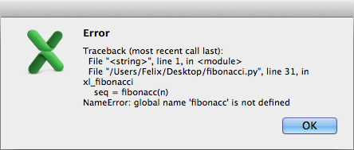
New
Sheetclass: The new class handles everything directly related to a Sheet. See the Python API section aboutSheetfor details (GH 62). A few examples:>>> Sheet(1).name 'Sheet1' >>> Sheet('Sheet1').clear_contents() >>> Sheet.active() <Sheet 'Sheet1' of Workbook 'Book1'>
The
Rangeclass has a new methodautofit()that autofits the width/height of either columns, rows or both (GH 33).Arguments:
axis : string or integer, default None - To autofit rows, use one of the following: 'rows' or 'r' - To autofit columns, use one of the following: 'columns' or 'c' - To autofit rows and columns, provide no arguments
Examples:
# Autofit column A Range('A:A').autofit() # Autofit row 1 Range('1:1').autofit() # Autofit columns and rows, taking into account Range('A1:E4') Range('A1:E4').autofit() # AutoFit rows, taking into account Range('A1:E4') Range('A1:E4').autofit('rows')
The
Workbookclass has the following additional methods:current()andset_current(). They determine the default Workbook forSheet,RangeorChart. On Windows, in case there are various Excel instances, when creating new or opening existing Workbooks, they are being created in the same instance as the current Workbook.>>> wb1 = Workbook() >>> wb2 = Workbook() >>> Workbook.current() <Workbook 'Book2'> >>> wb1.set_current() >>> Workbook.current() <Workbook 'Book1'>
If a
Sheet,RangeorChartobject is instantiated without an existingWorkbookobject, a user-friendly error message is raised (GH 58).New docs about Debugging and Data Structures Tutorial.
Bug Fixes
The
atleast_2dkeyword had no effect on Ranges consisting of a single cell and was raising an error when used in combination with theasarraykeyword. Both have been fixed (GH 53):>>> Range('A1').value = 1 >>> Range('A1', atleast_2d=True).value [[1.0]] >>> Range('A1', atleast_2d=True, asarray=True).value array([[1.]])
[Mac]: After creating two new unsaved Workbooks with
Workbook(), anySheet,RangeorChartobject would always just access the latest one, even if the Workbook had been specified (GH 63).[Mac]: When xlwings was imported without ever instantiating a
Workbookobject, Excel would start upon quitting the Python interpreter (GH 51).[Mac]: When installing xlwings, it now requires
psutilto be at least version2.0.0(GH 48).
v0.2.1 (August 7, 2014)
API changes
None
Enhancements
All VBA user settings have been reorganized into a section at the top of the VBA xlwings module:
PYTHON_WIN = ""
PYTHON_MAC = GetMacDir("Home") & "/anaconda/bin"
PYTHON_FROZEN = ThisWorkbook.Path & "\build\exe.win32-2.7"
PYTHONPATH = ThisWorkbook.Path
LOG_FILE = ThisWorkbook.Path & "\xlwings_log.txt"
Calling Python from within Excel VBA is now also supported on Mac, i.e. Python functions can be called like this:
RunPython("import bar; bar.foo()"). Running frozen executables (RunFrozenPython) isn’t available yet on Mac though.
Note that there is a slight difference in the way that this functionality behaves on Windows and Mac:
Windows: After calling the Macro (e.g. by pressing a button), Excel waits until Python is done. In case there’s an error in the Python code, a pop-up message is being shown with the traceback.
Mac: After calling the Macro, the call returns instantly but Excel’s Status Bar turns into “Running…” during the duration of the Python call. Python errors are currently not shown as a pop-up, but need to be checked in the log file. I.e. if the Status Bar returns to its default (“Ready”) but nothing has happened, check out the log file for the Python traceback.
Bug Fixes
None
Special thanks go to Georgi Petrov for helping with this release.
v0.2.0 (July 29, 2014)
API changes
None
Enhancements
Cross-platform: xlwings is now additionally supporting Microsoft Excel for Mac. The only functionality that is not yet available is the possibility to call the Python code from within Excel via VBA macros.
The
clearandclear_contentsmethods of theWorkbookobject now default to the active sheet (GH 5):wb = Workbook() wb.clear_contents() # Clears contents of the entire active sheet
Bug Fixes
DataFrames with MultiHeaders were sometimes getting truncated (GH 41).
v0.1.1 (June 27, 2014)
API Changes
If
asarray=True, NumPy arrays are now always at least 1d arrays, even in the case of a single cell (GH 14):
>>> Range('A1', asarray=True).value
array([34.])
Similar to NumPy’s logic, 1d Ranges in Excel, i.e. rows or columns, are now being read in as flat lists or 1d arrays. If you want the same behavior as before, you can use the
atleast_2dkeyword (GH 13).Note
The
tableproperty is also delivering a 1d array/list, if the table Range is really a column or row.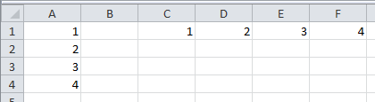
:
>>> Range('A1').vertical.value [1.0, 2.0, 3.0, 4.0] >>> Range('A1', atleast_2d=True).vertical.value [[1.0], [2.0], [3.0], [4.0]] >>> Range('C1').horizontal.value [1.0, 2.0, 3.0, 4.0] >>> Range('C1', atleast_2d=True).horizontal.value [[1.0, 2.0, 3.0, 4.0]] >>> Range('A1', asarray=True).table.value array([ 1., 2., 3., 4.]) >>> Range('A1', asarray=True, atleast_2d=True).table.value array([[ 1.], [ 2.], [ 3.], [ 4.]])
The single file approach has been dropped. xlwings is now a traditional Python package.
Enhancements
xlwings is now officially suppported on Python 2.6-2.7 and 3.1-3.4
Support for Pandas
Serieshas been added (GH 24):
>>> import numpy as np
>>> import pandas as pd
>>> from xlwings import Workbook, Range
>>> wb = Workbook()
>>> s = pd.Series([1.1, 3.3, 5., np.nan, 6., 8.])
>>> s
0 1.1
1 3.3
2 5.0
3 NaN
4 6.0
5 8.0
dtype: float64
>>> Range('A1').value = s
>>> Range('D1', index=False).value = s
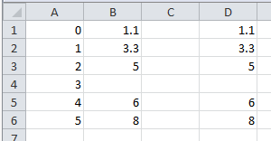
Excel constants have been added under their original Excel name, but categorized under their enum (GH 18), e.g.:
# Extra long version import xlwings as xl xl.constants.ChartType.xlArea # Long version from xlwings import constants constants.ChartType.xlArea # Short version from xlwings import ChartType ChartType.xlArea
Slightly enhanced Chart support to control the
ChartType(GH 1):
>>> from xlwings import Workbook, Range, Chart, ChartType
>>> wb = Workbook()
>>> Range('A1').value = [['one', 'two'],[10, 20]]
>>> my_chart = Chart().add(chart_type=ChartType.xlLine,
... name='My Chart',
... source_data=Range('A1').table)
alternatively, the properties can also be set like this:
>>> my_chart = Chart().add() # Existing Charts: my_chart = Chart('My Chart')
>>> my_chart.name = 'My Chart'
>>> my_chart.chart_type = ChartType.xlLine
>>> my_chart.set_source_data(Range('A1').table)
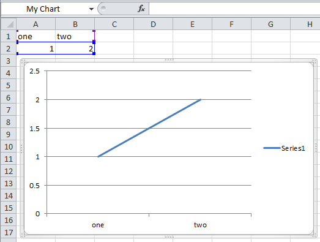
pytzis no longer a dependency asdatetimeobject are now being read in from Excel as time-zone naive (Excel doesn’t know timezones). Before,datetimeobjects got the UTC timezone attached.The
Workbookclass has the following additional methods:close()The
Rangeclass has the following additional methods:is_cell(),is_column(),is_row(),is_table()
Bug Fixes
The import error on Python 3 has been fixed (GH 26).
Python 3 now handles Pandas DataFrames with MultiIndex headers correctly (GH 39).
Sometimes, a Pandas DataFrame was not handling
nancorrectly in Excel or numbers were being truncated (GH 31) & (GH 35).Installation is now putting all files in the correct place (GH 20).
v0.1.0 (March 19, 2014)
Initial release of xlwings.